-
Payment
21:35:27 PM / 56:40:996 Fail
Payment
10.03.2024 21:35:27 10.04.2024 07:02:08 56:40:996 · #test-id=2FailInternal transferWhen close all the other opened windowsWhen User opens the T24 Url Then User should be able to login to T24
Then User should be able to login to T24 Then The user should be able to fill the commandlineAnd user should be able to see the the balance of the account before performing internal transfer
Then The user should be able to fill the commandlineAnd user should be able to see the the balance of the account before performing internal transfer 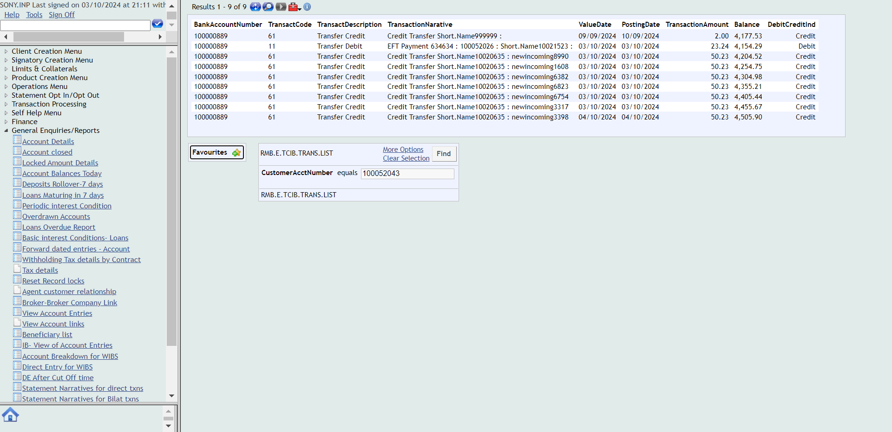Then The user should be able to navigate to Account transfer buttonAnd Enter the details in the account transfer fields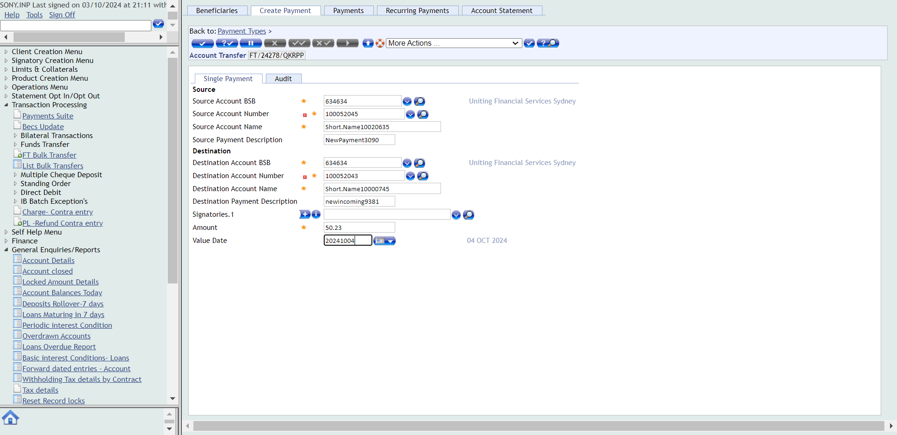Then Click on validateAnd Click on commitThen Verify whether the transaction complete message is displayed after commitingcom.frameium.stepdef.Hooks.afterEveryStep(io.cucumber.java.Scenario)
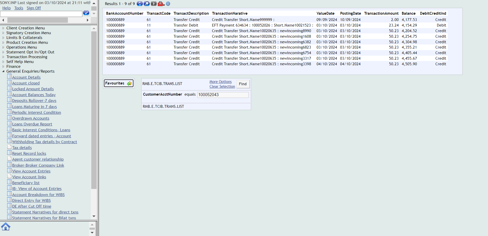Then The user should be able to navigate to Account transfer buttonAnd Enter the details in the account transfer fields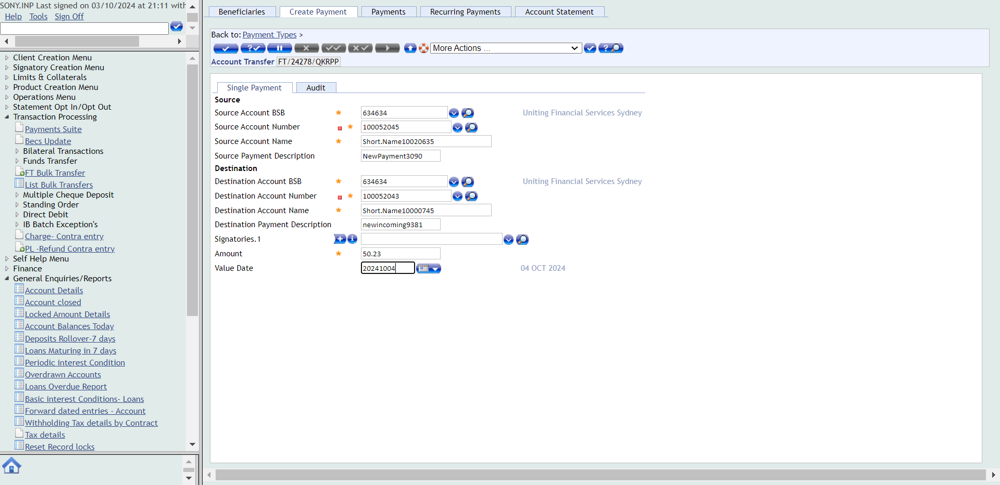Then Click on validateAnd Click on commitThen Verify whether the transaction complete message is displayed after commitingcom.frameium.stepdef.Hooks.afterEveryStep(io.cucumber.java.Scenario) And Navigate to account entriesStep skippedThen Enter the account number and click on find buttonStep skippedAnd Verify whether the transaction is reflected in the accountentriesStep skippedPassInternal transferWhen close all the other opened windowsWhen User opens the T24 Url
And Navigate to account entriesStep skippedThen Enter the account number and click on find buttonStep skippedAnd Verify whether the transaction is reflected in the accountentriesStep skippedPassInternal transferWhen close all the other opened windowsWhen User opens the T24 Url Then User should be able to login to T24
Then User should be able to login to T24 Then The user should be able to fill the commandlineAnd user should be able to see the the balance of the account before performing internal transfer
Then The user should be able to fill the commandlineAnd user should be able to see the the balance of the account before performing internal transfer
 Then The user should be able to navigate to Account transfer buttonAnd Enter the details in the account transfer fieldsThen Click on validateAnd Click on commitThen Verify whether the transaction complete message is displayed after commiting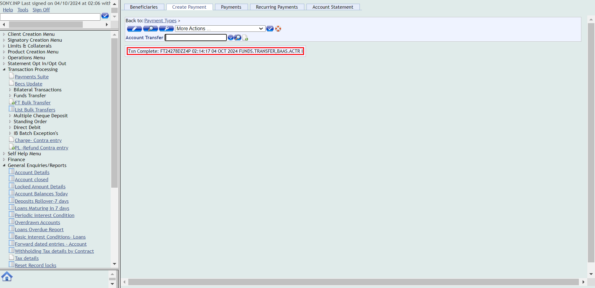And Navigate to account entriesThen Enter the account number and click on find buttonAnd Verify whether the transaction is reflected in the accountentries
Then The user should be able to navigate to Account transfer buttonAnd Enter the details in the account transfer fieldsThen Click on validateAnd Click on commitThen Verify whether the transaction complete message is displayed after commiting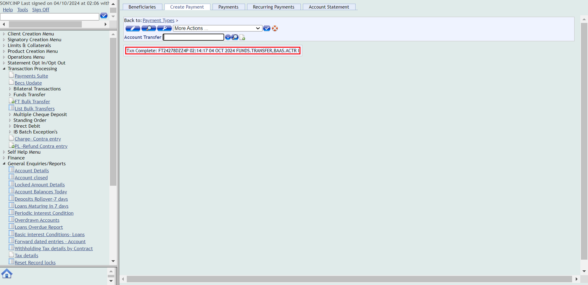And Navigate to account entriesThen Enter the account number and click on find buttonAnd Verify whether the transaction is reflected in the accountentries PassInternal Transfer narrativeWhen close all the other opened windowsWhen User opens the T24 Url
PassInternal Transfer narrativeWhen close all the other opened windowsWhen User opens the T24 Url Then User should be able to login to T24
Then User should be able to login to T24 Then The user should be able to fill the commandlineAnd The user should be able to click on general enquiries buttomAnd click on the IB-view of account entriesThen Enter the account numberAnd click on find buttonAnd The details of internal transfer should be reflected in the narratives
Then The user should be able to fill the commandlineAnd The user should be able to click on general enquiries buttomAnd click on the IB-view of account entriesThen Enter the account numberAnd click on find buttonAnd The details of internal transfer should be reflected in the narratives 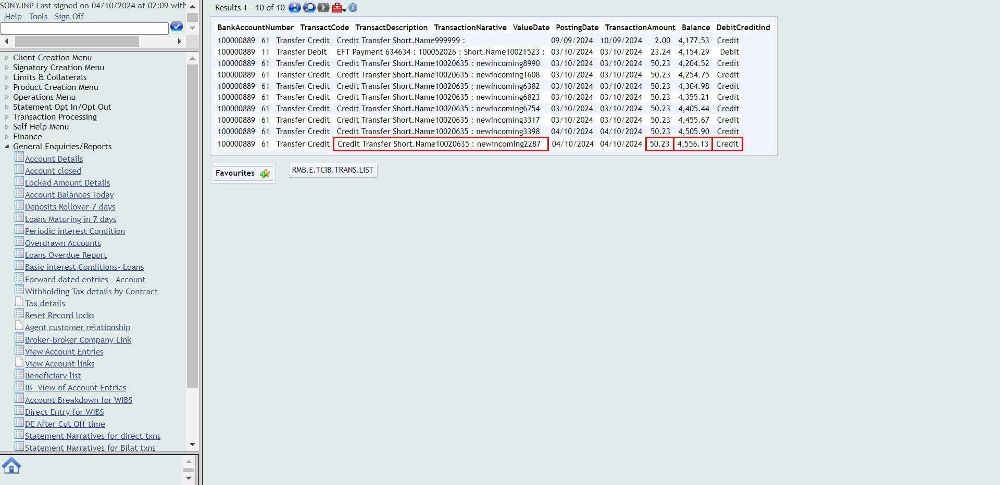FailExternal transferWhen close all the other opened windowsWhen User opens the T24 Url
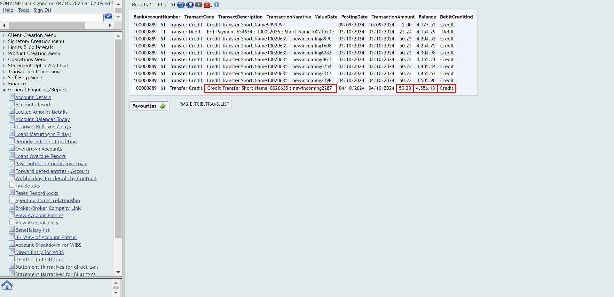FailExternal transferWhen close all the other opened windowsWhen User opens the T24 Url Then User should be able to login to T24
Then User should be able to login to T24 Then The user should be able to fill the commandlineAnd user should be able to see the the balance of the account before performing External transferThen The user should be able to navigate to Account transfer buttonAnd Enter the details in the account external transfer fields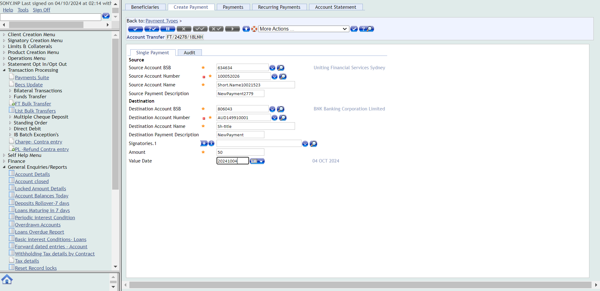Then Click on validateAnd Click on commitThen Verify whether the transaction complete message is displayed after commitingcom.frameium.stepdef.Hooks.afterEveryStep(io.cucumber.java.Scenario)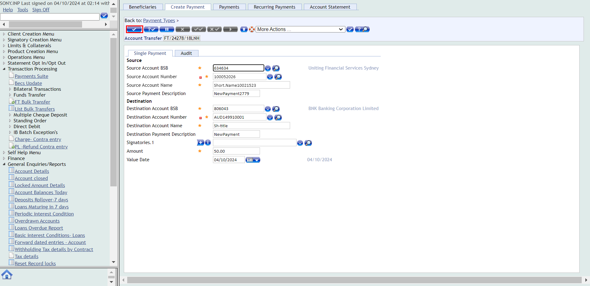And Navigate to account entriesStep skippedThen Enter the account number and click on find buttonStep skippedAnd Verify whether the external transaction is reflected in the accountentriesStep skippedFailExternal transferWhen close all the other opened windowsWhen User opens the T24 Url
Then The user should be able to fill the commandlineAnd user should be able to see the the balance of the account before performing External transferThen The user should be able to navigate to Account transfer buttonAnd Enter the details in the account external transfer fields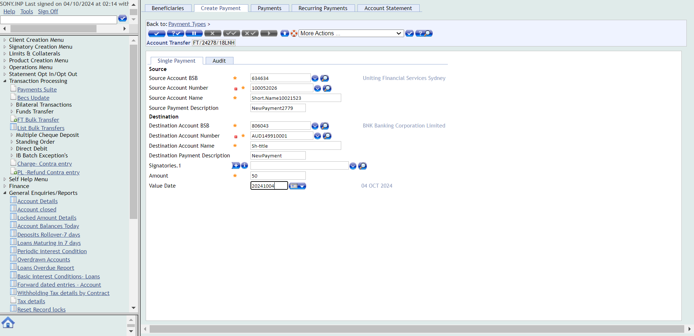Then Click on validateAnd Click on commitThen Verify whether the transaction complete message is displayed after commitingcom.frameium.stepdef.Hooks.afterEveryStep(io.cucumber.java.Scenario)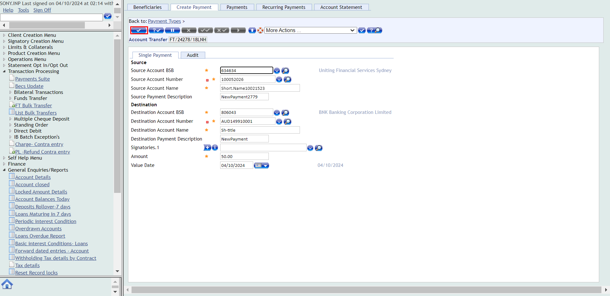And Navigate to account entriesStep skippedThen Enter the account number and click on find buttonStep skippedAnd Verify whether the external transaction is reflected in the accountentriesStep skippedFailExternal transferWhen close all the other opened windowsWhen User opens the T24 Url Then User should be able to login to T24
Then User should be able to login to T24 Then The user should be able to fill the commandlineAnd user should be able to see the the balance of the account before performing External transferThen The user should be able to navigate to Account transfer buttonAnd Enter the details in the account external transfer fieldsThen Click on validateAnd Click on commitThen Verify whether the transaction complete message is displayed after commitingcom.frameium.stepdef.Hooks.afterEveryStep(io.cucumber.java.Scenario)
Then The user should be able to fill the commandlineAnd user should be able to see the the balance of the account before performing External transferThen The user should be able to navigate to Account transfer buttonAnd Enter the details in the account external transfer fieldsThen Click on validateAnd Click on commitThen Verify whether the transaction complete message is displayed after commitingcom.frameium.stepdef.Hooks.afterEveryStep(io.cucumber.java.Scenario) And Navigate to account entriesStep skippedThen Enter the account number and click on find buttonStep skippedAnd Verify whether the external transaction is reflected in the accountentriesStep skippedFailExternal Transfer narrativeWhen close all the other opened windowsWhen User opens the T24 Url
And Navigate to account entriesStep skippedThen Enter the account number and click on find buttonStep skippedAnd Verify whether the external transaction is reflected in the accountentriesStep skippedFailExternal Transfer narrativeWhen close all the other opened windowsWhen User opens the T24 Url Then User should be able to login to T24Then The user should be able to fill the commandlineAnd The user should be able to click on general enquiries buttomAnd click on the IB-view of account entriesThen Enter the account numberAnd click on find buttonAnd The details of External transfer should be reflected in the narrativescom.frameium.stepdef.Hooks.afterEveryStep(io.cucumber.java.Scenario)FailExternal Transfer narrativeWhen close all the other opened windowsWhen User opens the T24 Url
Then User should be able to login to T24Then The user should be able to fill the commandlineAnd The user should be able to click on general enquiries buttomAnd click on the IB-view of account entriesThen Enter the account numberAnd click on find buttonAnd The details of External transfer should be reflected in the narrativescom.frameium.stepdef.Hooks.afterEveryStep(io.cucumber.java.Scenario)FailExternal Transfer narrativeWhen close all the other opened windowsWhen User opens the T24 Url Then User should be able to login to T24
Then User should be able to login to T24 Then The user should be able to fill the commandlineAnd The user should be able to click on general enquiries buttomAnd click on the IB-view of account entriesThen Enter the account numberAnd click on find buttonAnd The details of External transfer should be reflected in the narrativescom.frameium.stepdef.Hooks.afterEveryStep(io.cucumber.java.Scenario)
Then The user should be able to fill the commandlineAnd The user should be able to click on general enquiries buttomAnd click on the IB-view of account entriesThen Enter the account numberAnd click on find buttonAnd The details of External transfer should be reflected in the narrativescom.frameium.stepdef.Hooks.afterEveryStep(io.cucumber.java.Scenario) FailInternal transfer over limitWhen close all the other opened windowsWhen User opens the T24 Url
FailInternal transfer over limitWhen close all the other opened windowsWhen User opens the T24 Url Then User should be able to login to T24Then The user should be able to fill the commandlineAnd user should be able to see the the balance of the account before performing internal transferThen The user should be able to navigate to Account transfer buttonAnd Enter the details in the account transfer for internal transfer overlimitThen Click on validateAnd Click on commitThen Verify whether the transaction complete message is displayed after commitingcom.frameium.stepdef.Hooks.afterEveryStep(io.cucumber.java.Scenario)
Then User should be able to login to T24Then The user should be able to fill the commandlineAnd user should be able to see the the balance of the account before performing internal transferThen The user should be able to navigate to Account transfer buttonAnd Enter the details in the account transfer for internal transfer overlimitThen Click on validateAnd Click on commitThen Verify whether the transaction complete message is displayed after commitingcom.frameium.stepdef.Hooks.afterEveryStep(io.cucumber.java.Scenario) And The User clicks on signoffStep skippedThen Login to authoriser accountStep skippedThen The user should be able to fill the commandlineStep skippedAnd Navigate to unauthorised transactionsStep skippedThen Authorize the transactionStep skippedThen Verify whether the transaction complete message is displayed after commitingStep skippedAnd Navigate to account entriesStep skippedThen Enter the account number and click on find buttonStep skippedAnd Verify whether the transaction is reflected in the accountentriesStep skippedFailInternal transfer over limitWhen close all the other opened windowsWhen User opens the T24 Url
And The User clicks on signoffStep skippedThen Login to authoriser accountStep skippedThen The user should be able to fill the commandlineStep skippedAnd Navigate to unauthorised transactionsStep skippedThen Authorize the transactionStep skippedThen Verify whether the transaction complete message is displayed after commitingStep skippedAnd Navigate to account entriesStep skippedThen Enter the account number and click on find buttonStep skippedAnd Verify whether the transaction is reflected in the accountentriesStep skippedFailInternal transfer over limitWhen close all the other opened windowsWhen User opens the T24 Url Then User should be able to login to T24Then The user should be able to fill the commandlineAnd user should be able to see the the balance of the account before performing internal transfer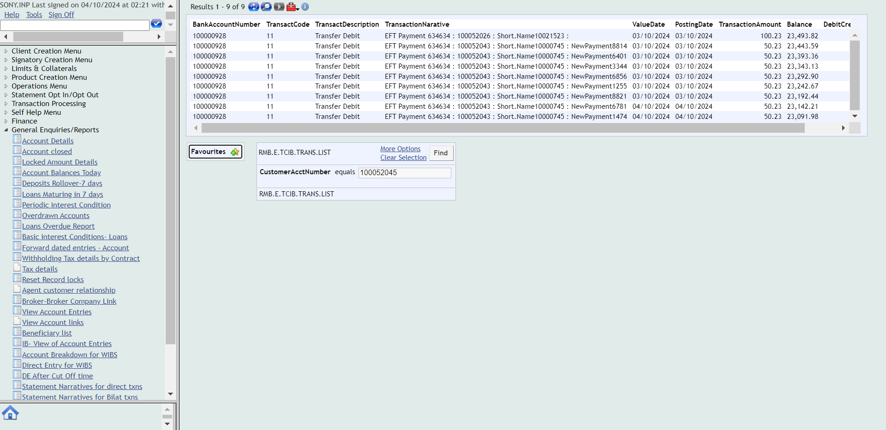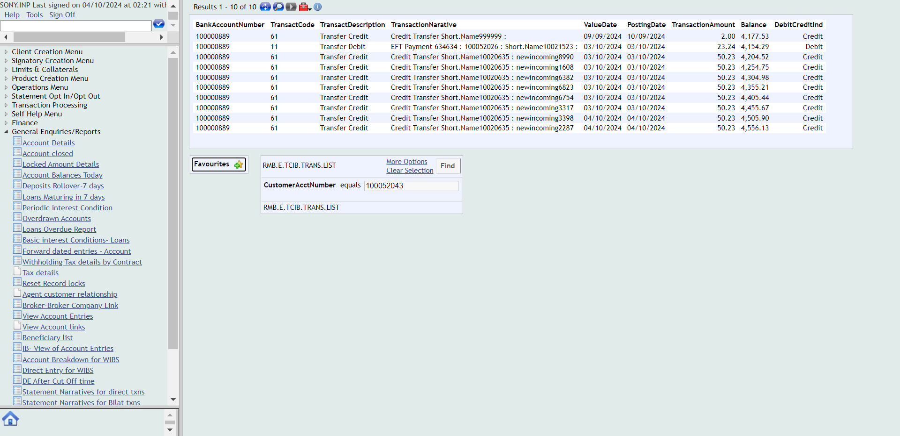Then The user should be able to navigate to Account transfer buttonAnd Enter the details in the account transfer for internal transfer overlimitThen Click on validateAnd Click on commitThen Verify whether the transaction complete message is displayed after commitingcom.frameium.stepdef.Hooks.afterEveryStep(io.cucumber.java.Scenario)
Then User should be able to login to T24Then The user should be able to fill the commandlineAnd user should be able to see the the balance of the account before performing internal transfer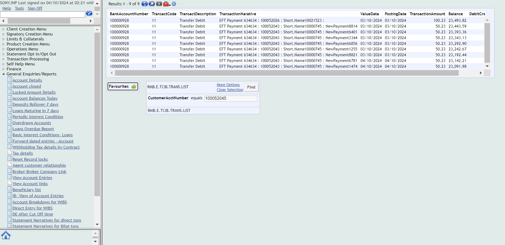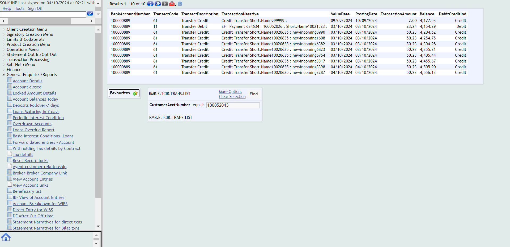Then The user should be able to navigate to Account transfer buttonAnd Enter the details in the account transfer for internal transfer overlimitThen Click on validateAnd Click on commitThen Verify whether the transaction complete message is displayed after commitingcom.frameium.stepdef.Hooks.afterEveryStep(io.cucumber.java.Scenario) And The User clicks on signoffStep skippedThen Login to authoriser accountStep skippedThen The user should be able to fill the commandlineStep skippedAnd Navigate to unauthorised transactionsStep skippedThen Authorize the transactionStep skippedThen Verify whether the transaction complete message is displayed after commitingStep skippedAnd Navigate to account entriesStep skippedThen Enter the account number and click on find buttonStep skippedAnd Verify whether the transaction is reflected in the accountentriesStep skippedFailInternal Transfer overlimit narrativeWhen close all the other opened windowsWhen User opens the T24 Url
And The User clicks on signoffStep skippedThen Login to authoriser accountStep skippedThen The user should be able to fill the commandlineStep skippedAnd Navigate to unauthorised transactionsStep skippedThen Authorize the transactionStep skippedThen Verify whether the transaction complete message is displayed after commitingStep skippedAnd Navigate to account entriesStep skippedThen Enter the account number and click on find buttonStep skippedAnd Verify whether the transaction is reflected in the accountentriesStep skippedFailInternal Transfer overlimit narrativeWhen close all the other opened windowsWhen User opens the T24 Url Then User should be able to login to T24Then The user should be able to fill the commandlineAnd The user should be able to click on general enquiries buttomAnd click on the IB-view of account entriesThen Enter the account numberAnd click on find buttonAnd The details of internal transfer overlimit should be reflected in the narrativescom.frameium.stepdef.Hooks.afterEveryStep(io.cucumber.java.Scenario)FailInternal Transfer overlimit narrativeWhen close all the other opened windowsWhen User opens the T24 Url
Then User should be able to login to T24Then The user should be able to fill the commandlineAnd The user should be able to click on general enquiries buttomAnd click on the IB-view of account entriesThen Enter the account numberAnd click on find buttonAnd The details of internal transfer overlimit should be reflected in the narrativescom.frameium.stepdef.Hooks.afterEveryStep(io.cucumber.java.Scenario)FailInternal Transfer overlimit narrativeWhen close all the other opened windowsWhen User opens the T24 Url Then User should be able to login to T24
Then User should be able to login to T24 Then The user should be able to fill the commandlineAnd The user should be able to click on general enquiries buttomAnd click on the IB-view of account entriesThen Enter the account numberAnd click on find buttonAnd The details of internal transfer overlimit should be reflected in the narrativescom.frameium.stepdef.Hooks.afterEveryStep(io.cucumber.java.Scenario)
Then The user should be able to fill the commandlineAnd The user should be able to click on general enquiries buttomAnd click on the IB-view of account entriesThen Enter the account numberAnd click on find buttonAnd The details of internal transfer overlimit should be reflected in the narrativescom.frameium.stepdef.Hooks.afterEveryStep(io.cucumber.java.Scenario) FailExternal transfer over limitWhen close all the other opened windowsWhen User opens the T24 Url
FailExternal transfer over limitWhen close all the other opened windowsWhen User opens the T24 Url Then User should be able to login to T24
Then User should be able to login to T24 Then The user should be able to fill the commandlineAnd user should be able to see the the balance of the account before performing internal transfer
Then The user should be able to fill the commandlineAnd user should be able to see the the balance of the account before performing internal transfer
 Then The user should be able to navigate to Account transfer buttonAnd Enter the details in the account transfer for internal transfer overlimitThen Click on validateAnd Click on commitThen Verify whether the transaction complete message is displayed after commitingcom.frameium.stepdef.Hooks.afterEveryStep(io.cucumber.java.Scenario)
Then The user should be able to navigate to Account transfer buttonAnd Enter the details in the account transfer for internal transfer overlimitThen Click on validateAnd Click on commitThen Verify whether the transaction complete message is displayed after commitingcom.frameium.stepdef.Hooks.afterEveryStep(io.cucumber.java.Scenario) And The User clicks on signoffStep skippedThen Login to authoriser accountStep skippedThen The user should be able to fill the commandlineStep skippedAnd Navigate to unauthorised transactionsStep skippedThen Authorize the transactionStep skippedThen Verify whether the transaction complete message is displayed after commitingStep skippedAnd Navigate to account entriesStep skippedThen Enter the account number and click on find buttonStep skippedAnd Verify whether the transaction is reflected in the accountentriesStep skippedFailExternal transfer over limitWhen close all the other opened windowsWhen User opens the T24 Url
And The User clicks on signoffStep skippedThen Login to authoriser accountStep skippedThen The user should be able to fill the commandlineStep skippedAnd Navigate to unauthorised transactionsStep skippedThen Authorize the transactionStep skippedThen Verify whether the transaction complete message is displayed after commitingStep skippedAnd Navigate to account entriesStep skippedThen Enter the account number and click on find buttonStep skippedAnd Verify whether the transaction is reflected in the accountentriesStep skippedFailExternal transfer over limitWhen close all the other opened windowsWhen User opens the T24 Url Then User should be able to login to T24Then The user should be able to fill the commandlineAnd user should be able to see the the balance of the account before performing internal transferThen The user should be able to navigate to Account transfer buttonAnd Enter the details in the account transfer for internal transfer overlimitThen Click on validateAnd Click on commitThen Verify whether the transaction complete message is displayed after commitingcom.frameium.stepdef.Hooks.afterEveryStep(io.cucumber.java.Scenario)
Then User should be able to login to T24Then The user should be able to fill the commandlineAnd user should be able to see the the balance of the account before performing internal transferThen The user should be able to navigate to Account transfer buttonAnd Enter the details in the account transfer for internal transfer overlimitThen Click on validateAnd Click on commitThen Verify whether the transaction complete message is displayed after commitingcom.frameium.stepdef.Hooks.afterEveryStep(io.cucumber.java.Scenario) And The User clicks on signoffStep skippedThen Login to authoriser accountStep skippedThen The user should be able to fill the commandlineStep skippedAnd Navigate to unauthorised transactionsStep skippedThen Authorize the transactionStep skippedThen Verify whether the transaction complete message is displayed after commitingStep skippedAnd Navigate to account entriesStep skippedThen Enter the account number and click on find buttonStep skippedAnd Verify whether the transaction is reflected in the accountentriesStep skippedFailExternal Transfer overlimit narrativeWhen close all the other opened windowsWhen User opens the T24 Url
And The User clicks on signoffStep skippedThen Login to authoriser accountStep skippedThen The user should be able to fill the commandlineStep skippedAnd Navigate to unauthorised transactionsStep skippedThen Authorize the transactionStep skippedThen Verify whether the transaction complete message is displayed after commitingStep skippedAnd Navigate to account entriesStep skippedThen Enter the account number and click on find buttonStep skippedAnd Verify whether the transaction is reflected in the accountentriesStep skippedFailExternal Transfer overlimit narrativeWhen close all the other opened windowsWhen User opens the T24 Url Then User should be able to login to T24
Then User should be able to login to T24 Then The user should be able to fill the commandlineAnd The user should be able to click on general enquiries buttomAnd click on the IB-view of account entriesThen Enter the account numberAnd click on find buttonAnd The details of internal transfer overlimit should be reflected in the narrativescom.frameium.stepdef.Hooks.afterEveryStep(io.cucumber.java.Scenario)
Then The user should be able to fill the commandlineAnd The user should be able to click on general enquiries buttomAnd click on the IB-view of account entriesThen Enter the account numberAnd click on find buttonAnd The details of internal transfer overlimit should be reflected in the narrativescom.frameium.stepdef.Hooks.afterEveryStep(io.cucumber.java.Scenario) FailExternal Transfer overlimit narrativeWhen close all the other opened windowsWhen User opens the T24 Url
FailExternal Transfer overlimit narrativeWhen close all the other opened windowsWhen User opens the T24 Url Then User should be able to login to T24
Then User should be able to login to T24 Then The user should be able to fill the commandlineAnd The user should be able to click on general enquiries buttomAnd click on the IB-view of account entriesThen Enter the account numberAnd click on find buttonAnd The details of internal transfer overlimit should be reflected in the narrativescom.frameium.stepdef.Hooks.afterEveryStep(io.cucumber.java.Scenario)
Then The user should be able to fill the commandlineAnd The user should be able to click on general enquiries buttomAnd click on the IB-view of account entriesThen Enter the account numberAnd click on find buttonAnd The details of internal transfer overlimit should be reflected in the narrativescom.frameium.stepdef.Hooks.afterEveryStep(io.cucumber.java.Scenario) PassBalance Maintanance sweep transferWhen close all the other opened windowsWhen User opens the T24 Url
PassBalance Maintanance sweep transferWhen close all the other opened windowsWhen User opens the T24 Url Then User should be able to login to T24
Then User should be able to login to T24 Then The user should be able to fill the commandlineAnd navigate to find account optionThen open the account that balance maintenance sweep transfer need to be appliedAnd reverse sweep transfer if any Sweep transfer is there and switch back to main menuThen navigate to operations menuAnd click on sweep maintainanceThen click on setup maintenance sweepAnd Enter the details for balance maintenance sweepThen Click on validateAnd Click on commitThen Verify whether the transaction complete message is displayed after commiting
Then The user should be able to fill the commandlineAnd navigate to find account optionThen open the account that balance maintenance sweep transfer need to be appliedAnd reverse sweep transfer if any Sweep transfer is there and switch back to main menuThen navigate to operations menuAnd click on sweep maintainanceThen click on setup maintenance sweepAnd Enter the details for balance maintenance sweepThen Click on validateAnd Click on commitThen Verify whether the transaction complete message is displayed after commiting And navigate to find account optionThen open the account that balance maintenance sweep transfer need to be appliedAnd verify that balance maintenance sweep transfer is reflected in the overview pagePassSurplus sweep transferWhen close all the other opened windowsWhen User opens the T24 Url
And navigate to find account optionThen open the account that balance maintenance sweep transfer need to be appliedAnd verify that balance maintenance sweep transfer is reflected in the overview pagePassSurplus sweep transferWhen close all the other opened windowsWhen User opens the T24 Url Then User should be able to login to T24
Then User should be able to login to T24 Then The user should be able to fill the commandlineAnd navigate to find account optionThen open the account that surplus sweep transfer need to be appliedAnd reverse sweep transfer if any Sweep transfer is there and switch back to main menuThen navigate to operations menuAnd click on sweep maintainanceThen click on setup surplus sweepAnd Enter the details for surplus sweepThen Click on validateAnd Click on commitThen Verify whether the transaction complete message is displayed after commiting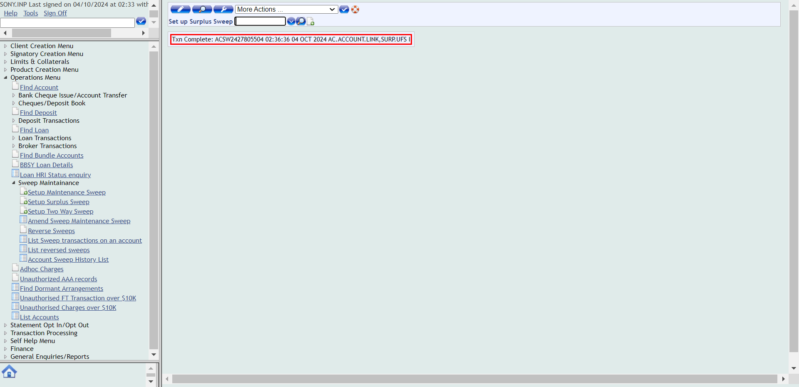And navigate to find account optionThen open the account that surplus sweep transfer need to be appliedAnd verify that Surplus sweep transfer is reflected in the overview pagePassTwo way sweep transfer SurplusWhen close all the other opened windowsWhen User opens the T24 Url
Then The user should be able to fill the commandlineAnd navigate to find account optionThen open the account that surplus sweep transfer need to be appliedAnd reverse sweep transfer if any Sweep transfer is there and switch back to main menuThen navigate to operations menuAnd click on sweep maintainanceThen click on setup surplus sweepAnd Enter the details for surplus sweepThen Click on validateAnd Click on commitThen Verify whether the transaction complete message is displayed after commiting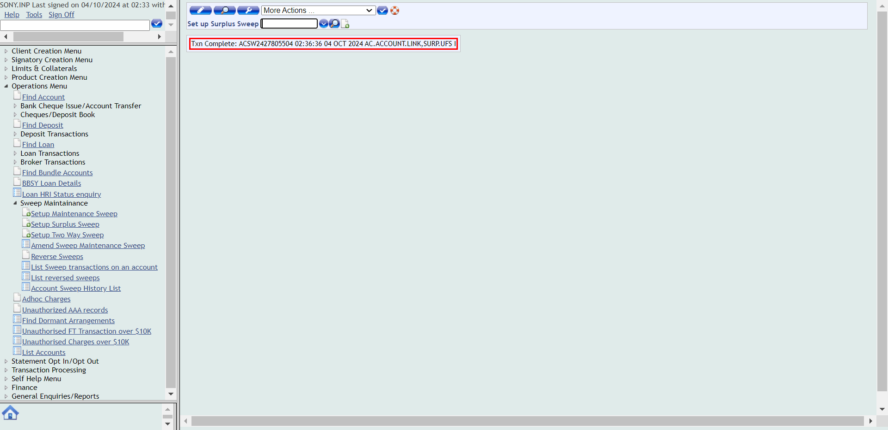And navigate to find account optionThen open the account that surplus sweep transfer need to be appliedAnd verify that Surplus sweep transfer is reflected in the overview pagePassTwo way sweep transfer SurplusWhen close all the other opened windowsWhen User opens the T24 Url Then User should be able to login to T24
Then User should be able to login to T24 Then The user should be able to fill the commandlineAnd navigate to find account optionThen open the account that Two way sweep transfer-surplus need to be appliedAnd reverse sweep transfer if any Sweep transfer is there and switch back to main menuThen navigate to operations menuAnd click on sweep maintainanceThen click on Setup Two Way SweepAnd Enter the details Two way sweep surplusThen Click on validateAnd Click on commitThen Verify whether the transaction complete message is displayed after commitingAnd navigate to find account optionThen open the account that Two way sweep transfer-surplus need to be appliedAnd verify that Two way sweep transfer-surplus is reflected in the overview pageFailTwo way sweep transfer Balance maintenanceWhen close all the other opened windowsWhen User opens the T24 Url
Then The user should be able to fill the commandlineAnd navigate to find account optionThen open the account that Two way sweep transfer-surplus need to be appliedAnd reverse sweep transfer if any Sweep transfer is there and switch back to main menuThen navigate to operations menuAnd click on sweep maintainanceThen click on Setup Two Way SweepAnd Enter the details Two way sweep surplusThen Click on validateAnd Click on commitThen Verify whether the transaction complete message is displayed after commitingAnd navigate to find account optionThen open the account that Two way sweep transfer-surplus need to be appliedAnd verify that Two way sweep transfer-surplus is reflected in the overview pageFailTwo way sweep transfer Balance maintenanceWhen close all the other opened windowsWhen User opens the T24 Url Then User should be able to login to T24Then The user should be able to fill the commandlineAnd navigate to find account optionThen open the account that Two way sweep transfer-BalanceMaintenance need to be appliedAnd reverse sweep transfer if any Sweep transfer is there and switch back to main menuThen navigate to operations menuAnd click on sweep maintainanceThen click on Setup Two Way SweepAnd Enter the details Two way sweep BalanceMaintenanceThen Click on validateAnd Click on commitThen Verify whether the transaction complete message is displayed after commitingcom.frameium.stepdef.Hooks.afterEveryStep(io.cucumber.java.Scenario)
Then User should be able to login to T24Then The user should be able to fill the commandlineAnd navigate to find account optionThen open the account that Two way sweep transfer-BalanceMaintenance need to be appliedAnd reverse sweep transfer if any Sweep transfer is there and switch back to main menuThen navigate to operations menuAnd click on sweep maintainanceThen click on Setup Two Way SweepAnd Enter the details Two way sweep BalanceMaintenanceThen Click on validateAnd Click on commitThen Verify whether the transaction complete message is displayed after commitingcom.frameium.stepdef.Hooks.afterEveryStep(io.cucumber.java.Scenario) And navigate to find account optionStep skippedThen open the account that Two way sweep transfer-BalanceMaintenance need to be appliedStep skippedAnd verify that Two way sweep transfer-BalanceMaintenance is reflected in the overview pageStep skippedFailTwo way sweep transfer Balance maintenanceWhen close all the other opened windowsWhen User opens the T24 Url
And navigate to find account optionStep skippedThen open the account that Two way sweep transfer-BalanceMaintenance need to be appliedStep skippedAnd verify that Two way sweep transfer-BalanceMaintenance is reflected in the overview pageStep skippedFailTwo way sweep transfer Balance maintenanceWhen close all the other opened windowsWhen User opens the T24 Url Then User should be able to login to T24Then The user should be able to fill the commandlineAnd navigate to find account optionThen open the account that Two way sweep transfer-BalanceMaintenance need to be appliedAnd reverse sweep transfer if any Sweep transfer is there and switch back to main menuThen navigate to operations menuAnd click on sweep maintainanceThen click on Setup Two Way SweepAnd Enter the details Two way sweep BalanceMaintenanceThen Click on validateAnd Click on commitThen Verify whether the transaction complete message is displayed after commiting
Then User should be able to login to T24Then The user should be able to fill the commandlineAnd navigate to find account optionThen open the account that Two way sweep transfer-BalanceMaintenance need to be appliedAnd reverse sweep transfer if any Sweep transfer is there and switch back to main menuThen navigate to operations menuAnd click on sweep maintainanceThen click on Setup Two Way SweepAnd Enter the details Two way sweep BalanceMaintenanceThen Click on validateAnd Click on commitThen Verify whether the transaction complete message is displayed after commiting And navigate to find account optionThen open the account that Two way sweep transfer-BalanceMaintenance need to be appliedcom.frameium.stepdef.Ufs.IBPayments.afterStep(io.cucumber.java.Scenario)com.frameium.stepdef.Hooks.afterEveryStep(io.cucumber.java.Scenario)And verify that Two way sweep transfer-BalanceMaintenance is reflected in the overview pageStep skippedFailAccount creationWhen close all the other opened windowscom.frameium.stepdef.Ufs.IBPayments.afterStep(io.cucumber.java.Scenario)com.frameium.stepdef.Hooks.afterEveryStep(io.cucumber.java.Scenario)When User opens the T24 UrlStep skippedThen User should be able to login to T24Step skippedThen The user should be able to fill the commandlineStep skippedAnd Navigate to Product catalogStep skippedThen Click on At call investment church Account New Arrangement buttonStep skippedAnd Enter the customer number for creating At call Investment church in the customer fieldStep skippedThen Click on validateStep skippedAnd Select the account mandate recordStep skippedAnd Click on commit the deal for creating accountStep skippedThen Verify whether the transaction complete message is displayed after commitingStep skippedAnd switch back to main windowStep skippedThen The user should be able to fill the commandlineStep skippedThen navigate to find account optionStep skippedAnd open the newly created accountStep skippedThen Verify the newly created accountStep skippedFailAccount creationWhen close all the other opened windowscom.frameium.stepdef.Ufs.IBPayments.afterStep(io.cucumber.java.Scenario)com.frameium.stepdef.Hooks.afterEveryStep(io.cucumber.java.Scenario)When User opens the T24 UrlStep skippedThen User should be able to login to T24Step skippedThen The user should be able to fill the commandlineStep skippedAnd Navigate to Product catalogStep skippedThen Click on At call investment church Account New Arrangement buttonStep skippedAnd Enter the customer number for creating At call Investment church in the customer fieldStep skippedThen Click on validateStep skippedAnd Select the account mandate recordStep skippedAnd Click on commit the deal for creating accountStep skippedThen Verify whether the transaction complete message is displayed after commitingStep skippedAnd switch back to main windowStep skippedThen The user should be able to fill the commandlineStep skippedThen navigate to find account optionStep skippedAnd open the newly created accountStep skippedThen Verify the newly created accountStep skippedFailAccount closureWhen close all the other opened windowscom.frameium.stepdef.Ufs.IBPayments.afterStep(io.cucumber.java.Scenario)com.frameium.stepdef.Hooks.afterEveryStep(io.cucumber.java.Scenario)When User opens the T24 UrlStep skippedThen User should be able to login to T24Step skippedThen The user should be able to fill the commandlineStep skippedAnd navigate to find account optionStep skippedThen open the account for performing closureStep skippedAnd click on perform closureStep skippedThen Click on validateStep skippedAnd Click on commitStep skippedThen click on accept overrideStep skippedThen Verify whether the transaction complete message is displayedStep skippedAnd switch back to main windowStep skippedThen The user should be able to fill the commandlineStep skippedThen navigate to find account optionStep skippedThen open the account for performing closureStep skippedAnd Verify whether the account status changed to Pending ClosureStep skippedFailAccount closureWhen close all the other opened windowscom.frameium.stepdef.Ufs.IBPayments.afterStep(io.cucumber.java.Scenario)com.frameium.stepdef.Hooks.afterEveryStep(io.cucumber.java.Scenario)When User opens the T24 UrlStep skippedThen User should be able to login to T24Step skippedThen The user should be able to fill the commandlineStep skippedAnd navigate to find account optionStep skippedThen open the account for performing closureStep skippedAnd click on perform closureStep skippedThen Click on validateStep skippedAnd Click on commitStep skippedThen click on accept overrideStep skippedThen Verify whether the transaction complete message is displayedStep skippedAnd switch back to main windowStep skippedThen The user should be able to fill the commandlineStep skippedThen navigate to find account optionStep skippedThen open the account for performing closureStep skippedAnd Verify whether the account status changed to Pending ClosureStep skippedFailDeposit CreationWhen close all the other opened windowscom.frameium.stepdef.Ufs.IBPayments.afterStep(io.cucumber.java.Scenario)com.frameium.stepdef.Hooks.afterEveryStep(io.cucumber.java.Scenario)When User opens the T24 UrlStep skippedThen User should be able to login to T24Step skippedThen The user should be able to fill the commandlineStep skippedAnd Navigate to Product catalogStep skippedThen click on fixed Term non churchStep skippedAnd fill the customer number in customer fieldStep skippedThen Click on validateStep skippedThen Enter the commitment amountStep skippedAnd provide the rollover periodStep skippedThen Enter the payout detailsStep skippedThen Click on validateStep skippedAnd Click on commit for deposit creationStep skippedThen click on accept overrideStep skippedThen Verify whether the transaction complete message is displayedStep skippedAnd switch back to main windowStep skippedThen The user should be able to fill the commandlineStep skippedAnd navigate to find deposit optionStep skippedThen open the newly created depositStep skippedThen Verify the newly created depositStep skippedAnd switch back to main windowStep skippedThen The user should be able to fill the commandlineStep skippedThen The user should be able to navigate to Account transfer buttonStep skippedAnd Enter the details in the account transfer fields for deposit fundingStep skippedThen Click on validateStep skippedAnd Click on commitStep skippedThen Verify whether the transaction complete message is displayed after commitingStep skippedFailDeposit CreationWhen close all the other opened windowscom.frameium.stepdef.Ufs.IBPayments.afterStep(io.cucumber.java.Scenario)com.frameium.stepdef.Hooks.afterEveryStep(io.cucumber.java.Scenario)When User opens the T24 UrlStep skippedThen User should be able to login to T24Step skippedThen The user should be able to fill the commandlineStep skippedAnd Navigate to Product catalogStep skippedThen click on fixed Term non churchStep skippedAnd fill the customer number in customer fieldStep skippedThen Click on validateStep skippedThen Enter the commitment amountStep skippedAnd provide the rollover periodStep skippedThen Enter the payout detailsStep skippedThen Click on validateStep skippedAnd Click on commit for deposit creationStep skippedThen click on accept overrideStep skippedThen Verify whether the transaction complete message is displayedStep skippedAnd switch back to main windowStep skippedThen The user should be able to fill the commandlineStep skippedAnd navigate to find deposit optionStep skippedThen open the newly created depositStep skippedThen Verify the newly created depositStep skippedAnd switch back to main windowStep skippedThen The user should be able to fill the commandlineStep skippedThen The user should be able to navigate to Account transfer buttonStep skippedAnd Enter the details in the account transfer fields for deposit fundingStep skippedThen Click on validateStep skippedAnd Click on commitStep skippedThen Verify whether the transaction complete message is displayed after commitingStep skippedFailDeposit ClosureWhen close all the other opened windowscom.frameium.stepdef.Ufs.IBPayments.afterStep(io.cucumber.java.Scenario)com.frameium.stepdef.Hooks.afterEveryStep(io.cucumber.java.Scenario)When User opens the T24 UrlStep skippedThen User should be able to login to T24Step skippedThen The user should be able to fill the commandlineStep skippedAnd navigate to find deposit for deposit closureStep skippedThen open the newly created depositStep skippedAnd Click on Redeem DepositStep skippedThen from the newly opened window select the reason for account closureStep skippedThen Click on validateStep skippedAnd Enter the deposit payout detailsStep skippedThen Click on validateStep skippedAnd Click on commitStep skippedThen click on accept overrideStep skippedThen Verify whether the transaction complete message is displayed after redeem depositStep skippedAnd verify simulation status becomes Completed - SuccessfullyStep skippedAnd switch back to main windowStep skippedThen The user should be able to fill the commandlineStep skippedAnd navigate to find deposit for deposit closureStep skippedThen open the newly created depositStep skippedAnd click on redemptionstatementStep skippedThen perform the deposit redemptionStep skippedThen Click on validateStep skippedAnd Enter the deposit payout detailsStep skippedThen Click on validateStep skippedAnd Click on commitStep skippedThen click on accept overrideStep skippedThen Verify whether the transaction complete message is displayedStep skippedAnd switch back to main windowStep skippedThen The user should be able to fill the commandlineStep skippedAnd navigate to find deposit for deposit closureStep skippedThen open the deposit for closureStep skippedAnd verify the deposit closureStep skippedFailDeposit ClosureWhen close all the other opened windowscom.frameium.stepdef.Ufs.IBPayments.afterStep(io.cucumber.java.Scenario)com.frameium.stepdef.Hooks.afterEveryStep(io.cucumber.java.Scenario)When User opens the T24 UrlStep skippedThen User should be able to login to T24Step skippedThen The user should be able to fill the commandlineStep skippedAnd navigate to find deposit for deposit closureStep skippedThen open the newly created depositStep skippedAnd Click on Redeem DepositStep skippedThen from the newly opened window select the reason for account closureStep skippedThen Click on validateStep skippedAnd Enter the deposit payout detailsStep skippedThen Click on validateStep skippedAnd Click on commitStep skippedThen click on accept overrideStep skippedThen Verify whether the transaction complete message is displayed after redeem depositStep skippedAnd verify simulation status becomes Completed - SuccessfullyStep skippedAnd switch back to main windowStep skippedThen The user should be able to fill the commandlineStep skippedAnd navigate to find deposit for deposit closureStep skippedThen open the newly created depositStep skippedAnd click on redemptionstatementStep skippedThen perform the deposit redemptionStep skippedThen Click on validateStep skippedAnd Enter the deposit payout detailsStep skippedThen Click on validateStep skippedAnd Click on commitStep skippedThen click on accept overrideStep skippedThen Verify whether the transaction complete message is displayedStep skippedAnd switch back to main windowStep skippedThen The user should be able to fill the commandlineStep skippedAnd navigate to find deposit for deposit closureStep skippedThen open the deposit for closureStep skippedAnd verify the deposit closureStep skippedFailLoan CreationWhen close all the other opened windowscom.frameium.stepdef.Ufs.IBPayments.afterStep(io.cucumber.java.Scenario)com.frameium.stepdef.Hooks.afterEveryStep(io.cucumber.java.Scenario)When User opens the T24 UrlStep skippedThen User should be able to login to T24Step skippedThen The user should be able to fill the commandlineStep skippedAnd Navigate to Product catalogStep skippedThen click on commercial loan New ArrangementStep skippedAnd fill the customer number in customer fieldStep skippedThen Click on validateStep skippedAnd Provide the loan interest detailsStep skippedThen enter the commitment amount and termStep skippedAnd Select the account mandate recordStep skippedThen Click on validate after entering loan detailsStep skippedAnd Click on commitStep skippedThen Verify whether the transaction complete message is displayedStep skippedAnd switch back to main windowStep skippedAnd The User clicks on signoffStep skippedThen Login to authoriser accountStep skippedThen The user should be able to fill the commandlineStep skippedAnd user should be able to navigate to find unauthorised loanStep skippedThen open the newly created loanStep skippedAnd authorise the loanStep skippedThen Verify whether the transaction complete message is displayedStep skippedAnd switch back to main windowStep skippedThen The user should be able to fill the commandlineStep skippedAnd user should be able to navigate to find loanStep skippedThen open the newly created loanStep skippedThen verify the newly created loanStep skippedFailLoan CreationWhen close all the other opened windowscom.frameium.stepdef.Ufs.IBPayments.afterStep(io.cucumber.java.Scenario)com.frameium.stepdef.Hooks.afterEveryStep(io.cucumber.java.Scenario)When User opens the T24 UrlStep skippedThen User should be able to login to T24Step skippedThen The user should be able to fill the commandlineStep skippedAnd Navigate to Product catalogStep skippedThen click on commercial loan New ArrangementStep skippedAnd fill the customer number in customer fieldStep skippedThen Click on validateStep skippedAnd Provide the loan interest detailsStep skippedThen enter the commitment amount and termStep skippedAnd Select the account mandate recordStep skippedThen Click on validate after entering loan detailsStep skippedAnd Click on commitStep skippedThen Verify whether the transaction complete message is displayedStep skippedAnd switch back to main windowStep skippedAnd The User clicks on signoffStep skippedThen Login to authoriser accountStep skippedThen The user should be able to fill the commandlineStep skippedAnd user should be able to navigate to find unauthorised loanStep skippedThen open the newly created loanStep skippedAnd authorise the loanStep skippedThen Verify whether the transaction complete message is displayedStep skippedAnd switch back to main windowStep skippedThen The user should be able to fill the commandlineStep skippedAnd user should be able to navigate to find loanStep skippedThen open the newly created loanStep skippedThen verify the newly created loanStep skippedFailLoan ClosureWhen close all the other opened windowscom.frameium.stepdef.Ufs.IBPayments.afterStep(io.cucumber.java.Scenario)com.frameium.stepdef.Hooks.afterEveryStep(io.cucumber.java.Scenario)When User opens the T24 UrlStep skippedThen User should be able to login to T24Step skippedThen The user should be able to fill the commandlineStep skippedAnd user should be able to navigate to find loanStep skippedThen open the loan that need to be closedStep skippedAnd Click on desbursementStep skippedThen Enter the desbursement details for loanStep skippedThen Click on validateStep skippedAnd Click on commitStep skippedThen click on accept overrideStep skippedThen Verify whether the transaction complete message is displayedStep skippedThen switch back to main windowStep skippedAnd The User clicks on signoffStep skippedThen Login to authoriser accountStep skippedThen The user should be able to fill the commandlineStep skippedAnd user should be able to navigate to find loanStep skippedThen open the loan that need to be closedStep skippedAnd Authorise the desbusement for the loanStep skippedThen switch back to main windowStep skippedAnd The User clicks on signoffStep skippedThen User should be able to login to T24Step skippedThen The user should be able to fill the commandlineStep skippedAnd user should be able to navigate to find loanStep skippedThen open the loan that need to be closedStep skippedAnd Click on request payoffStep skippedThen from the newly opened window select the reason for loan closureStep skippedThen Click on validateStep skippedAnd Click on commitStep skippedAnd verify simulation status becomes Executed - SuccessfullyStep skippedThen switch back to main windowStep skippedThen The user should be able to fill the commandlineStep skippedAnd user should be able to navigate to find loanStep skippedThen open the loan that need to be closedStep skippedThen click on the payoff statement from overfiew screen of loanStep skippedThen switch back to main windowStep skippedThen The user should be able to fill the commandlineStep skippedAnd user should be able to navigate to find loanStep skippedThen open the loan that need to be closedStep skippedAnd click on loan payoffStep skippedThen Enter the loan payoff detailsStep skippedThen Click on validateStep skippedAnd Click on commitStep skippedThen click on accept overrideStep skippedThen Verify whether the transaction complete message is displayedStep skippedThen switch back to main windowStep skippedThen The user should be able to fill the commandlineStep skippedAnd user should be able to navigate to find loanStep skippedThen open the loan that need to be closedStep skippedAnd verify whether the loan status is moved to pending closureStep skippedFailLoan ClosureWhen close all the other opened windowscom.frameium.stepdef.Ufs.IBPayments.afterStep(io.cucumber.java.Scenario)com.frameium.stepdef.Hooks.afterEveryStep(io.cucumber.java.Scenario)When User opens the T24 UrlStep skippedThen User should be able to login to T24Step skippedThen The user should be able to fill the commandlineStep skippedAnd user should be able to navigate to find loanStep skippedThen open the loan that need to be closedStep skippedAnd Click on desbursementStep skippedThen Enter the desbursement details for loanStep skippedThen Click on validateStep skippedAnd Click on commitStep skippedThen click on accept overrideStep skippedThen Verify whether the transaction complete message is displayedStep skippedThen switch back to main windowStep skippedAnd The User clicks on signoffStep skippedThen Login to authoriser accountStep skippedThen The user should be able to fill the commandlineStep skippedAnd user should be able to navigate to find loanStep skippedThen open the loan that need to be closedStep skippedAnd Authorise the desbusement for the loanStep skippedThen switch back to main windowStep skippedAnd The User clicks on signoffStep skippedThen User should be able to login to T24Step skippedThen The user should be able to fill the commandlineStep skippedAnd user should be able to navigate to find loanStep skippedThen open the loan that need to be closedStep skippedAnd Click on request payoffStep skippedThen from the newly opened window select the reason for loan closureStep skippedThen Click on validateStep skippedAnd Click on commitStep skippedAnd verify simulation status becomes Executed - SuccessfullyStep skippedThen switch back to main windowStep skippedThen The user should be able to fill the commandlineStep skippedAnd user should be able to navigate to find loanStep skippedThen open the loan that need to be closedStep skippedThen click on the payoff statement from overfiew screen of loanStep skippedThen switch back to main windowStep skippedThen The user should be able to fill the commandlineStep skippedAnd user should be able to navigate to find loanStep skippedThen open the loan that need to be closedStep skippedAnd click on loan payoffStep skippedThen Enter the loan payoff detailsStep skippedThen Click on validateStep skippedAnd Click on commitStep skippedThen click on accept overrideStep skippedThen Verify whether the transaction complete message is displayedStep skippedThen switch back to main windowStep skippedThen The user should be able to fill the commandlineStep skippedAnd user should be able to navigate to find loanStep skippedThen open the loan that need to be closedStep skippedAnd verify whether the loan status is moved to pending closureStep skippedFailDeposit partial withdrawalWhen close all the other opened windowscom.frameium.stepdef.Ufs.IBPayments.afterStep(io.cucumber.java.Scenario)com.frameium.stepdef.Hooks.afterEveryStep(io.cucumber.java.Scenario)When User opens the T24 UrlStep skippedThen User should be able to login to T24Step skippedThen The user should be able to fill the commandlineStep skippedAnd navigate to find deposit option for partial wthdrawalStep skippedThen open the depositStep skippedAnd click on Partial withdrawalStep skippedThen Enter the partial withdrawal amountStep skippedThen Click on validateStep skippedAnd Click on commitStep skippedThen click on accept overrideStep skippedThen Verify whether the transaction complete message is displayedStep skippedAnd verify simulation status becomes Completed - SuccessfullyStep skippedThen switch back to main windowStep skippedThen The user should be able to fill the commandlineStep skippedAnd navigate to find deposit option for partial wthdrawalStep skippedThen open the depositStep skippedAnd Click on the withdrawal statementStep skippedThen Proceed to partial withdrawalStep skippedThen Click on validateStep skippedAnd Click on commitStep skippedThen click on accept overrideStep skippedThen Verify whether the transaction complete message is displayedStep skippedThen switch back to main windowStep skippedThen The user should be able to fill the commandlineStep skippedAnd click on the IB-view of account entriesStep skippedThen Enter the account number of deposit in the IB view of account entriesStep skippedAnd Enter the date in ibview formatStep skippedAnd click on find buttonStep skippedThen Check the narratives of Partial WithdrawalStep skippedFailDeposit partial withdrawalWhen close all the other opened windowscom.frameium.stepdef.Ufs.IBPayments.afterStep(io.cucumber.java.Scenario)com.frameium.stepdef.Hooks.afterEveryStep(io.cucumber.java.Scenario)When User opens the T24 UrlStep skippedThen User should be able to login to T24Step skippedThen The user should be able to fill the commandlineStep skippedAnd navigate to find deposit option for partial wthdrawalStep skippedThen open the depositStep skippedAnd click on Partial withdrawalStep skippedThen Enter the partial withdrawal amountStep skippedThen Click on validateStep skippedAnd Click on commitStep skippedThen click on accept overrideStep skippedThen Verify whether the transaction complete message is displayedStep skippedAnd verify simulation status becomes Completed - SuccessfullyStep skippedThen switch back to main windowStep skippedThen The user should be able to fill the commandlineStep skippedAnd navigate to find deposit option for partial wthdrawalStep skippedThen open the depositStep skippedAnd Click on the withdrawal statementStep skippedThen Proceed to partial withdrawalStep skippedThen Click on validateStep skippedAnd Click on commitStep skippedThen click on accept overrideStep skippedThen Verify whether the transaction complete message is displayedStep skippedThen switch back to main windowStep skippedThen The user should be able to fill the commandlineStep skippedAnd click on the IB-view of account entriesStep skippedThen Enter the account number of deposit in the IB view of account entriesStep skippedAnd Enter the date in ibview formatStep skippedAnd click on find buttonStep skippedThen Check the narratives of Partial WithdrawalStep skippedFailDirect DebitWhen close all the other opened windowscom.frameium.stepdef.Ufs.IBPayments.afterStep(io.cucumber.java.Scenario)com.frameium.stepdef.Hooks.afterEveryStep(io.cucumber.java.Scenario)When User opens the T24 UrlStep skippedThen User should be able to login to T24Step skippedThen The user should be able to fill the commandlineStep skippedAnd navigate to find account optionStep skippedThen open the account for posting Direct DebitStep skippedAnd click on Direct DebitStep skippedThen Enter the details of direct debitStep skippedThen Click on validateStep skippedAnd Click on commitStep skippedAnd Click on commitStep skippedThen Verify whether the transaction complete message is displayed after committing DDStep skippedFailDirect DebitWhen close all the other opened windowscom.frameium.stepdef.Ufs.IBPayments.afterStep(io.cucumber.java.Scenario)com.frameium.stepdef.Hooks.afterEveryStep(io.cucumber.java.Scenario)When User opens the T24 UrlStep skippedThen User should be able to login to T24Step skippedThen The user should be able to fill the commandlineStep skippedAnd navigate to find account optionStep skippedThen open the account for posting Direct DebitStep skippedAnd click on Direct DebitStep skippedThen Enter the details of direct debitStep skippedThen Click on validateStep skippedAnd Click on commitStep skippedAnd Click on commitStep skippedThen Verify whether the transaction complete message is displayed after committing DDStep skippedFailLoan repaymentWhen close all the other opened windowscom.frameium.stepdef.Ufs.IBPayments.afterStep(io.cucumber.java.Scenario)com.frameium.stepdef.Hooks.afterEveryStep(io.cucumber.java.Scenario)When User opens the T24 UrlStep skippedThen User should be able to login to T24Step skippedThen The user should be able to fill the commandlineStep skippedAnd user should be able to navigate to find loanStep skippedAnd open the account that need to perform the loan repaymentStep skippedThen click on repayment buttonStep skippedAnd enter the repayment detailsStep skippedThen Click on validateStep skippedAnd Click on commitStep skippedThen click on accept overrideStep skippedThen Verify whether the transaction complete message is displayedStep skippedThen switch back to main windowStep skippedThen The user should be able to fill the commandlineStep skippedAnd The user should be able to click on general enquiries buttomStep skippedAnd click on the IB-view of account entriesStep skippedThen Enter the account number of Loan repayment in the IB-view of account entriesStep skippedFailLoan repaymentWhen close all the other opened windowscom.frameium.stepdef.Ufs.IBPayments.afterStep(io.cucumber.java.Scenario)com.frameium.stepdef.Hooks.afterEveryStep(io.cucumber.java.Scenario)When User opens the T24 UrlStep skippedThen User should be able to login to T24Step skippedThen The user should be able to fill the commandlineStep skippedAnd user should be able to navigate to find loanStep skippedAnd open the account that need to perform the loan repaymentStep skippedThen click on repayment buttonStep skippedAnd enter the repayment detailsStep skippedThen Click on validateStep skippedAnd Click on commitStep skippedThen click on accept overrideStep skippedThen Verify whether the transaction complete message is displayedStep skippedThen switch back to main windowStep skippedThen The user should be able to fill the commandlineStep skippedAnd The user should be able to click on general enquiries buttomStep skippedAnd click on the IB-view of account entriesStep skippedThen Enter the account number of Loan repayment in the IB-view of account entriesStep skipped
And navigate to find account optionThen open the account that Two way sweep transfer-BalanceMaintenance need to be appliedcom.frameium.stepdef.Ufs.IBPayments.afterStep(io.cucumber.java.Scenario)com.frameium.stepdef.Hooks.afterEveryStep(io.cucumber.java.Scenario)And verify that Two way sweep transfer-BalanceMaintenance is reflected in the overview pageStep skippedFailAccount creationWhen close all the other opened windowscom.frameium.stepdef.Ufs.IBPayments.afterStep(io.cucumber.java.Scenario)com.frameium.stepdef.Hooks.afterEveryStep(io.cucumber.java.Scenario)When User opens the T24 UrlStep skippedThen User should be able to login to T24Step skippedThen The user should be able to fill the commandlineStep skippedAnd Navigate to Product catalogStep skippedThen Click on At call investment church Account New Arrangement buttonStep skippedAnd Enter the customer number for creating At call Investment church in the customer fieldStep skippedThen Click on validateStep skippedAnd Select the account mandate recordStep skippedAnd Click on commit the deal for creating accountStep skippedThen Verify whether the transaction complete message is displayed after commitingStep skippedAnd switch back to main windowStep skippedThen The user should be able to fill the commandlineStep skippedThen navigate to find account optionStep skippedAnd open the newly created accountStep skippedThen Verify the newly created accountStep skippedFailAccount creationWhen close all the other opened windowscom.frameium.stepdef.Ufs.IBPayments.afterStep(io.cucumber.java.Scenario)com.frameium.stepdef.Hooks.afterEveryStep(io.cucumber.java.Scenario)When User opens the T24 UrlStep skippedThen User should be able to login to T24Step skippedThen The user should be able to fill the commandlineStep skippedAnd Navigate to Product catalogStep skippedThen Click on At call investment church Account New Arrangement buttonStep skippedAnd Enter the customer number for creating At call Investment church in the customer fieldStep skippedThen Click on validateStep skippedAnd Select the account mandate recordStep skippedAnd Click on commit the deal for creating accountStep skippedThen Verify whether the transaction complete message is displayed after commitingStep skippedAnd switch back to main windowStep skippedThen The user should be able to fill the commandlineStep skippedThen navigate to find account optionStep skippedAnd open the newly created accountStep skippedThen Verify the newly created accountStep skippedFailAccount closureWhen close all the other opened windowscom.frameium.stepdef.Ufs.IBPayments.afterStep(io.cucumber.java.Scenario)com.frameium.stepdef.Hooks.afterEveryStep(io.cucumber.java.Scenario)When User opens the T24 UrlStep skippedThen User should be able to login to T24Step skippedThen The user should be able to fill the commandlineStep skippedAnd navigate to find account optionStep skippedThen open the account for performing closureStep skippedAnd click on perform closureStep skippedThen Click on validateStep skippedAnd Click on commitStep skippedThen click on accept overrideStep skippedThen Verify whether the transaction complete message is displayedStep skippedAnd switch back to main windowStep skippedThen The user should be able to fill the commandlineStep skippedThen navigate to find account optionStep skippedThen open the account for performing closureStep skippedAnd Verify whether the account status changed to Pending ClosureStep skippedFailAccount closureWhen close all the other opened windowscom.frameium.stepdef.Ufs.IBPayments.afterStep(io.cucumber.java.Scenario)com.frameium.stepdef.Hooks.afterEveryStep(io.cucumber.java.Scenario)When User opens the T24 UrlStep skippedThen User should be able to login to T24Step skippedThen The user should be able to fill the commandlineStep skippedAnd navigate to find account optionStep skippedThen open the account for performing closureStep skippedAnd click on perform closureStep skippedThen Click on validateStep skippedAnd Click on commitStep skippedThen click on accept overrideStep skippedThen Verify whether the transaction complete message is displayedStep skippedAnd switch back to main windowStep skippedThen The user should be able to fill the commandlineStep skippedThen navigate to find account optionStep skippedThen open the account for performing closureStep skippedAnd Verify whether the account status changed to Pending ClosureStep skippedFailDeposit CreationWhen close all the other opened windowscom.frameium.stepdef.Ufs.IBPayments.afterStep(io.cucumber.java.Scenario)com.frameium.stepdef.Hooks.afterEveryStep(io.cucumber.java.Scenario)When User opens the T24 UrlStep skippedThen User should be able to login to T24Step skippedThen The user should be able to fill the commandlineStep skippedAnd Navigate to Product catalogStep skippedThen click on fixed Term non churchStep skippedAnd fill the customer number in customer fieldStep skippedThen Click on validateStep skippedThen Enter the commitment amountStep skippedAnd provide the rollover periodStep skippedThen Enter the payout detailsStep skippedThen Click on validateStep skippedAnd Click on commit for deposit creationStep skippedThen click on accept overrideStep skippedThen Verify whether the transaction complete message is displayedStep skippedAnd switch back to main windowStep skippedThen The user should be able to fill the commandlineStep skippedAnd navigate to find deposit optionStep skippedThen open the newly created depositStep skippedThen Verify the newly created depositStep skippedAnd switch back to main windowStep skippedThen The user should be able to fill the commandlineStep skippedThen The user should be able to navigate to Account transfer buttonStep skippedAnd Enter the details in the account transfer fields for deposit fundingStep skippedThen Click on validateStep skippedAnd Click on commitStep skippedThen Verify whether the transaction complete message is displayed after commitingStep skippedFailDeposit CreationWhen close all the other opened windowscom.frameium.stepdef.Ufs.IBPayments.afterStep(io.cucumber.java.Scenario)com.frameium.stepdef.Hooks.afterEveryStep(io.cucumber.java.Scenario)When User opens the T24 UrlStep skippedThen User should be able to login to T24Step skippedThen The user should be able to fill the commandlineStep skippedAnd Navigate to Product catalogStep skippedThen click on fixed Term non churchStep skippedAnd fill the customer number in customer fieldStep skippedThen Click on validateStep skippedThen Enter the commitment amountStep skippedAnd provide the rollover periodStep skippedThen Enter the payout detailsStep skippedThen Click on validateStep skippedAnd Click on commit for deposit creationStep skippedThen click on accept overrideStep skippedThen Verify whether the transaction complete message is displayedStep skippedAnd switch back to main windowStep skippedThen The user should be able to fill the commandlineStep skippedAnd navigate to find deposit optionStep skippedThen open the newly created depositStep skippedThen Verify the newly created depositStep skippedAnd switch back to main windowStep skippedThen The user should be able to fill the commandlineStep skippedThen The user should be able to navigate to Account transfer buttonStep skippedAnd Enter the details in the account transfer fields for deposit fundingStep skippedThen Click on validateStep skippedAnd Click on commitStep skippedThen Verify whether the transaction complete message is displayed after commitingStep skippedFailDeposit ClosureWhen close all the other opened windowscom.frameium.stepdef.Ufs.IBPayments.afterStep(io.cucumber.java.Scenario)com.frameium.stepdef.Hooks.afterEveryStep(io.cucumber.java.Scenario)When User opens the T24 UrlStep skippedThen User should be able to login to T24Step skippedThen The user should be able to fill the commandlineStep skippedAnd navigate to find deposit for deposit closureStep skippedThen open the newly created depositStep skippedAnd Click on Redeem DepositStep skippedThen from the newly opened window select the reason for account closureStep skippedThen Click on validateStep skippedAnd Enter the deposit payout detailsStep skippedThen Click on validateStep skippedAnd Click on commitStep skippedThen click on accept overrideStep skippedThen Verify whether the transaction complete message is displayed after redeem depositStep skippedAnd verify simulation status becomes Completed - SuccessfullyStep skippedAnd switch back to main windowStep skippedThen The user should be able to fill the commandlineStep skippedAnd navigate to find deposit for deposit closureStep skippedThen open the newly created depositStep skippedAnd click on redemptionstatementStep skippedThen perform the deposit redemptionStep skippedThen Click on validateStep skippedAnd Enter the deposit payout detailsStep skippedThen Click on validateStep skippedAnd Click on commitStep skippedThen click on accept overrideStep skippedThen Verify whether the transaction complete message is displayedStep skippedAnd switch back to main windowStep skippedThen The user should be able to fill the commandlineStep skippedAnd navigate to find deposit for deposit closureStep skippedThen open the deposit for closureStep skippedAnd verify the deposit closureStep skippedFailDeposit ClosureWhen close all the other opened windowscom.frameium.stepdef.Ufs.IBPayments.afterStep(io.cucumber.java.Scenario)com.frameium.stepdef.Hooks.afterEveryStep(io.cucumber.java.Scenario)When User opens the T24 UrlStep skippedThen User should be able to login to T24Step skippedThen The user should be able to fill the commandlineStep skippedAnd navigate to find deposit for deposit closureStep skippedThen open the newly created depositStep skippedAnd Click on Redeem DepositStep skippedThen from the newly opened window select the reason for account closureStep skippedThen Click on validateStep skippedAnd Enter the deposit payout detailsStep skippedThen Click on validateStep skippedAnd Click on commitStep skippedThen click on accept overrideStep skippedThen Verify whether the transaction complete message is displayed after redeem depositStep skippedAnd verify simulation status becomes Completed - SuccessfullyStep skippedAnd switch back to main windowStep skippedThen The user should be able to fill the commandlineStep skippedAnd navigate to find deposit for deposit closureStep skippedThen open the newly created depositStep skippedAnd click on redemptionstatementStep skippedThen perform the deposit redemptionStep skippedThen Click on validateStep skippedAnd Enter the deposit payout detailsStep skippedThen Click on validateStep skippedAnd Click on commitStep skippedThen click on accept overrideStep skippedThen Verify whether the transaction complete message is displayedStep skippedAnd switch back to main windowStep skippedThen The user should be able to fill the commandlineStep skippedAnd navigate to find deposit for deposit closureStep skippedThen open the deposit for closureStep skippedAnd verify the deposit closureStep skippedFailLoan CreationWhen close all the other opened windowscom.frameium.stepdef.Ufs.IBPayments.afterStep(io.cucumber.java.Scenario)com.frameium.stepdef.Hooks.afterEveryStep(io.cucumber.java.Scenario)When User opens the T24 UrlStep skippedThen User should be able to login to T24Step skippedThen The user should be able to fill the commandlineStep skippedAnd Navigate to Product catalogStep skippedThen click on commercial loan New ArrangementStep skippedAnd fill the customer number in customer fieldStep skippedThen Click on validateStep skippedAnd Provide the loan interest detailsStep skippedThen enter the commitment amount and termStep skippedAnd Select the account mandate recordStep skippedThen Click on validate after entering loan detailsStep skippedAnd Click on commitStep skippedThen Verify whether the transaction complete message is displayedStep skippedAnd switch back to main windowStep skippedAnd The User clicks on signoffStep skippedThen Login to authoriser accountStep skippedThen The user should be able to fill the commandlineStep skippedAnd user should be able to navigate to find unauthorised loanStep skippedThen open the newly created loanStep skippedAnd authorise the loanStep skippedThen Verify whether the transaction complete message is displayedStep skippedAnd switch back to main windowStep skippedThen The user should be able to fill the commandlineStep skippedAnd user should be able to navigate to find loanStep skippedThen open the newly created loanStep skippedThen verify the newly created loanStep skippedFailLoan CreationWhen close all the other opened windowscom.frameium.stepdef.Ufs.IBPayments.afterStep(io.cucumber.java.Scenario)com.frameium.stepdef.Hooks.afterEveryStep(io.cucumber.java.Scenario)When User opens the T24 UrlStep skippedThen User should be able to login to T24Step skippedThen The user should be able to fill the commandlineStep skippedAnd Navigate to Product catalogStep skippedThen click on commercial loan New ArrangementStep skippedAnd fill the customer number in customer fieldStep skippedThen Click on validateStep skippedAnd Provide the loan interest detailsStep skippedThen enter the commitment amount and termStep skippedAnd Select the account mandate recordStep skippedThen Click on validate after entering loan detailsStep skippedAnd Click on commitStep skippedThen Verify whether the transaction complete message is displayedStep skippedAnd switch back to main windowStep skippedAnd The User clicks on signoffStep skippedThen Login to authoriser accountStep skippedThen The user should be able to fill the commandlineStep skippedAnd user should be able to navigate to find unauthorised loanStep skippedThen open the newly created loanStep skippedAnd authorise the loanStep skippedThen Verify whether the transaction complete message is displayedStep skippedAnd switch back to main windowStep skippedThen The user should be able to fill the commandlineStep skippedAnd user should be able to navigate to find loanStep skippedThen open the newly created loanStep skippedThen verify the newly created loanStep skippedFailLoan ClosureWhen close all the other opened windowscom.frameium.stepdef.Ufs.IBPayments.afterStep(io.cucumber.java.Scenario)com.frameium.stepdef.Hooks.afterEveryStep(io.cucumber.java.Scenario)When User opens the T24 UrlStep skippedThen User should be able to login to T24Step skippedThen The user should be able to fill the commandlineStep skippedAnd user should be able to navigate to find loanStep skippedThen open the loan that need to be closedStep skippedAnd Click on desbursementStep skippedThen Enter the desbursement details for loanStep skippedThen Click on validateStep skippedAnd Click on commitStep skippedThen click on accept overrideStep skippedThen Verify whether the transaction complete message is displayedStep skippedThen switch back to main windowStep skippedAnd The User clicks on signoffStep skippedThen Login to authoriser accountStep skippedThen The user should be able to fill the commandlineStep skippedAnd user should be able to navigate to find loanStep skippedThen open the loan that need to be closedStep skippedAnd Authorise the desbusement for the loanStep skippedThen switch back to main windowStep skippedAnd The User clicks on signoffStep skippedThen User should be able to login to T24Step skippedThen The user should be able to fill the commandlineStep skippedAnd user should be able to navigate to find loanStep skippedThen open the loan that need to be closedStep skippedAnd Click on request payoffStep skippedThen from the newly opened window select the reason for loan closureStep skippedThen Click on validateStep skippedAnd Click on commitStep skippedAnd verify simulation status becomes Executed - SuccessfullyStep skippedThen switch back to main windowStep skippedThen The user should be able to fill the commandlineStep skippedAnd user should be able to navigate to find loanStep skippedThen open the loan that need to be closedStep skippedThen click on the payoff statement from overfiew screen of loanStep skippedThen switch back to main windowStep skippedThen The user should be able to fill the commandlineStep skippedAnd user should be able to navigate to find loanStep skippedThen open the loan that need to be closedStep skippedAnd click on loan payoffStep skippedThen Enter the loan payoff detailsStep skippedThen Click on validateStep skippedAnd Click on commitStep skippedThen click on accept overrideStep skippedThen Verify whether the transaction complete message is displayedStep skippedThen switch back to main windowStep skippedThen The user should be able to fill the commandlineStep skippedAnd user should be able to navigate to find loanStep skippedThen open the loan that need to be closedStep skippedAnd verify whether the loan status is moved to pending closureStep skippedFailLoan ClosureWhen close all the other opened windowscom.frameium.stepdef.Ufs.IBPayments.afterStep(io.cucumber.java.Scenario)com.frameium.stepdef.Hooks.afterEveryStep(io.cucumber.java.Scenario)When User opens the T24 UrlStep skippedThen User should be able to login to T24Step skippedThen The user should be able to fill the commandlineStep skippedAnd user should be able to navigate to find loanStep skippedThen open the loan that need to be closedStep skippedAnd Click on desbursementStep skippedThen Enter the desbursement details for loanStep skippedThen Click on validateStep skippedAnd Click on commitStep skippedThen click on accept overrideStep skippedThen Verify whether the transaction complete message is displayedStep skippedThen switch back to main windowStep skippedAnd The User clicks on signoffStep skippedThen Login to authoriser accountStep skippedThen The user should be able to fill the commandlineStep skippedAnd user should be able to navigate to find loanStep skippedThen open the loan that need to be closedStep skippedAnd Authorise the desbusement for the loanStep skippedThen switch back to main windowStep skippedAnd The User clicks on signoffStep skippedThen User should be able to login to T24Step skippedThen The user should be able to fill the commandlineStep skippedAnd user should be able to navigate to find loanStep skippedThen open the loan that need to be closedStep skippedAnd Click on request payoffStep skippedThen from the newly opened window select the reason for loan closureStep skippedThen Click on validateStep skippedAnd Click on commitStep skippedAnd verify simulation status becomes Executed - SuccessfullyStep skippedThen switch back to main windowStep skippedThen The user should be able to fill the commandlineStep skippedAnd user should be able to navigate to find loanStep skippedThen open the loan that need to be closedStep skippedThen click on the payoff statement from overfiew screen of loanStep skippedThen switch back to main windowStep skippedThen The user should be able to fill the commandlineStep skippedAnd user should be able to navigate to find loanStep skippedThen open the loan that need to be closedStep skippedAnd click on loan payoffStep skippedThen Enter the loan payoff detailsStep skippedThen Click on validateStep skippedAnd Click on commitStep skippedThen click on accept overrideStep skippedThen Verify whether the transaction complete message is displayedStep skippedThen switch back to main windowStep skippedThen The user should be able to fill the commandlineStep skippedAnd user should be able to navigate to find loanStep skippedThen open the loan that need to be closedStep skippedAnd verify whether the loan status is moved to pending closureStep skippedFailDeposit partial withdrawalWhen close all the other opened windowscom.frameium.stepdef.Ufs.IBPayments.afterStep(io.cucumber.java.Scenario)com.frameium.stepdef.Hooks.afterEveryStep(io.cucumber.java.Scenario)When User opens the T24 UrlStep skippedThen User should be able to login to T24Step skippedThen The user should be able to fill the commandlineStep skippedAnd navigate to find deposit option for partial wthdrawalStep skippedThen open the depositStep skippedAnd click on Partial withdrawalStep skippedThen Enter the partial withdrawal amountStep skippedThen Click on validateStep skippedAnd Click on commitStep skippedThen click on accept overrideStep skippedThen Verify whether the transaction complete message is displayedStep skippedAnd verify simulation status becomes Completed - SuccessfullyStep skippedThen switch back to main windowStep skippedThen The user should be able to fill the commandlineStep skippedAnd navigate to find deposit option for partial wthdrawalStep skippedThen open the depositStep skippedAnd Click on the withdrawal statementStep skippedThen Proceed to partial withdrawalStep skippedThen Click on validateStep skippedAnd Click on commitStep skippedThen click on accept overrideStep skippedThen Verify whether the transaction complete message is displayedStep skippedThen switch back to main windowStep skippedThen The user should be able to fill the commandlineStep skippedAnd click on the IB-view of account entriesStep skippedThen Enter the account number of deposit in the IB view of account entriesStep skippedAnd Enter the date in ibview formatStep skippedAnd click on find buttonStep skippedThen Check the narratives of Partial WithdrawalStep skippedFailDeposit partial withdrawalWhen close all the other opened windowscom.frameium.stepdef.Ufs.IBPayments.afterStep(io.cucumber.java.Scenario)com.frameium.stepdef.Hooks.afterEveryStep(io.cucumber.java.Scenario)When User opens the T24 UrlStep skippedThen User should be able to login to T24Step skippedThen The user should be able to fill the commandlineStep skippedAnd navigate to find deposit option for partial wthdrawalStep skippedThen open the depositStep skippedAnd click on Partial withdrawalStep skippedThen Enter the partial withdrawal amountStep skippedThen Click on validateStep skippedAnd Click on commitStep skippedThen click on accept overrideStep skippedThen Verify whether the transaction complete message is displayedStep skippedAnd verify simulation status becomes Completed - SuccessfullyStep skippedThen switch back to main windowStep skippedThen The user should be able to fill the commandlineStep skippedAnd navigate to find deposit option for partial wthdrawalStep skippedThen open the depositStep skippedAnd Click on the withdrawal statementStep skippedThen Proceed to partial withdrawalStep skippedThen Click on validateStep skippedAnd Click on commitStep skippedThen click on accept overrideStep skippedThen Verify whether the transaction complete message is displayedStep skippedThen switch back to main windowStep skippedThen The user should be able to fill the commandlineStep skippedAnd click on the IB-view of account entriesStep skippedThen Enter the account number of deposit in the IB view of account entriesStep skippedAnd Enter the date in ibview formatStep skippedAnd click on find buttonStep skippedThen Check the narratives of Partial WithdrawalStep skippedFailDirect DebitWhen close all the other opened windowscom.frameium.stepdef.Ufs.IBPayments.afterStep(io.cucumber.java.Scenario)com.frameium.stepdef.Hooks.afterEveryStep(io.cucumber.java.Scenario)When User opens the T24 UrlStep skippedThen User should be able to login to T24Step skippedThen The user should be able to fill the commandlineStep skippedAnd navigate to find account optionStep skippedThen open the account for posting Direct DebitStep skippedAnd click on Direct DebitStep skippedThen Enter the details of direct debitStep skippedThen Click on validateStep skippedAnd Click on commitStep skippedAnd Click on commitStep skippedThen Verify whether the transaction complete message is displayed after committing DDStep skippedFailDirect DebitWhen close all the other opened windowscom.frameium.stepdef.Ufs.IBPayments.afterStep(io.cucumber.java.Scenario)com.frameium.stepdef.Hooks.afterEveryStep(io.cucumber.java.Scenario)When User opens the T24 UrlStep skippedThen User should be able to login to T24Step skippedThen The user should be able to fill the commandlineStep skippedAnd navigate to find account optionStep skippedThen open the account for posting Direct DebitStep skippedAnd click on Direct DebitStep skippedThen Enter the details of direct debitStep skippedThen Click on validateStep skippedAnd Click on commitStep skippedAnd Click on commitStep skippedThen Verify whether the transaction complete message is displayed after committing DDStep skippedFailLoan repaymentWhen close all the other opened windowscom.frameium.stepdef.Ufs.IBPayments.afterStep(io.cucumber.java.Scenario)com.frameium.stepdef.Hooks.afterEveryStep(io.cucumber.java.Scenario)When User opens the T24 UrlStep skippedThen User should be able to login to T24Step skippedThen The user should be able to fill the commandlineStep skippedAnd user should be able to navigate to find loanStep skippedAnd open the account that need to perform the loan repaymentStep skippedThen click on repayment buttonStep skippedAnd enter the repayment detailsStep skippedThen Click on validateStep skippedAnd Click on commitStep skippedThen click on accept overrideStep skippedThen Verify whether the transaction complete message is displayedStep skippedThen switch back to main windowStep skippedThen The user should be able to fill the commandlineStep skippedAnd The user should be able to click on general enquiries buttomStep skippedAnd click on the IB-view of account entriesStep skippedThen Enter the account number of Loan repayment in the IB-view of account entriesStep skippedFailLoan repaymentWhen close all the other opened windowscom.frameium.stepdef.Ufs.IBPayments.afterStep(io.cucumber.java.Scenario)com.frameium.stepdef.Hooks.afterEveryStep(io.cucumber.java.Scenario)When User opens the T24 UrlStep skippedThen User should be able to login to T24Step skippedThen The user should be able to fill the commandlineStep skippedAnd user should be able to navigate to find loanStep skippedAnd open the account that need to perform the loan repaymentStep skippedThen click on repayment buttonStep skippedAnd enter the repayment detailsStep skippedThen Click on validateStep skippedAnd Click on commitStep skippedThen click on accept overrideStep skippedThen Verify whether the transaction complete message is displayedStep skippedThen switch back to main windowStep skippedThen The user should be able to fill the commandlineStep skippedAnd The user should be able to click on general enquiries buttomStep skippedAnd click on the IB-view of account entriesStep skippedThen Enter the account number of Loan repayment in the IB-view of account entriesStep skipped
-
org.openqa.selenium.TimeoutException
1 tests
org.openqa.selenium.TimeoutException
1 failedStatus Timestamp TestName Fail 22:18:29 PM com.frameium.stepdef.Ufs.IBPayments.afterStep(io.cucumber.java.Scenario) Payment.Two way sweep transfer Balance maintenance.com.frameium.stepdef.Ufs.IBPayments.afterStep(io.cucumber.java.Scenario)Fail 22:21:29 PM com.frameium.stepdef.Hooks.afterEveryStep(io.cucumber.java.Scenario) Payment.Two way sweep transfer Balance maintenance.com.frameium.stepdef.Hooks.afterEveryStep(io.cucumber.java.Scenario)Fail 22:24:30 PM When close all the other opened windows Payment.Account creation.When close all the other opened windowsFail 22:27:32 PM com.frameium.stepdef.Ufs.IBPayments.afterStep(io.cucumber.java.Scenario) Payment.Account creation.com.frameium.stepdef.Ufs.IBPayments.afterStep(io.cucumber.java.Scenario)Fail 22:30:32 PM com.frameium.stepdef.Hooks.afterEveryStep(io.cucumber.java.Scenario) Payment.Account creation.com.frameium.stepdef.Hooks.afterEveryStep(io.cucumber.java.Scenario)Fail 22:33:33 PM When close all the other opened windows Payment.Account creation.When close all the other opened windowsFail 22:36:34 PM com.frameium.stepdef.Ufs.IBPayments.afterStep(io.cucumber.java.Scenario) Payment.Account creation.com.frameium.stepdef.Ufs.IBPayments.afterStep(io.cucumber.java.Scenario)Fail 22:39:34 PM com.frameium.stepdef.Hooks.afterEveryStep(io.cucumber.java.Scenario) Payment.Account creation.com.frameium.stepdef.Hooks.afterEveryStep(io.cucumber.java.Scenario)Fail 22:42:35 PM When close all the other opened windows Payment.Account closure.When close all the other opened windowsFail 22:45:37 PM com.frameium.stepdef.Ufs.IBPayments.afterStep(io.cucumber.java.Scenario) Payment.Account closure.com.frameium.stepdef.Ufs.IBPayments.afterStep(io.cucumber.java.Scenario)Fail 22:48:37 PM com.frameium.stepdef.Hooks.afterEveryStep(io.cucumber.java.Scenario) Payment.Account closure.com.frameium.stepdef.Hooks.afterEveryStep(io.cucumber.java.Scenario)Fail 22:51:39 PM When close all the other opened windows Payment.Account closure.When close all the other opened windowsFail 22:54:40 PM com.frameium.stepdef.Ufs.IBPayments.afterStep(io.cucumber.java.Scenario) Payment.Account closure.com.frameium.stepdef.Ufs.IBPayments.afterStep(io.cucumber.java.Scenario)Fail 22:57:40 PM com.frameium.stepdef.Hooks.afterEveryStep(io.cucumber.java.Scenario) Payment.Account closure.com.frameium.stepdef.Hooks.afterEveryStep(io.cucumber.java.Scenario)Fail 23:00:41 PM When close all the other opened windows Payment.Deposit Creation.When close all the other opened windowsFail 23:03:42 PM com.frameium.stepdef.Ufs.IBPayments.afterStep(io.cucumber.java.Scenario) Payment.Deposit Creation.com.frameium.stepdef.Ufs.IBPayments.afterStep(io.cucumber.java.Scenario)Fail 23:06:42 PM com.frameium.stepdef.Hooks.afterEveryStep(io.cucumber.java.Scenario) Payment.Deposit Creation.com.frameium.stepdef.Hooks.afterEveryStep(io.cucumber.java.Scenario)Fail 23:09:44 PM When close all the other opened windows Payment.Deposit Creation.When close all the other opened windowsFail 23:12:45 PM com.frameium.stepdef.Ufs.IBPayments.afterStep(io.cucumber.java.Scenario) Payment.Deposit Creation.com.frameium.stepdef.Ufs.IBPayments.afterStep(io.cucumber.java.Scenario)Fail 23:15:45 PM com.frameium.stepdef.Hooks.afterEveryStep(io.cucumber.java.Scenario) Payment.Deposit Creation.com.frameium.stepdef.Hooks.afterEveryStep(io.cucumber.java.Scenario)Fail 23:18:47 PM When close all the other opened windows Payment.Deposit Closure.When close all the other opened windowsFail 23:21:48 PM com.frameium.stepdef.Ufs.IBPayments.afterStep(io.cucumber.java.Scenario) Payment.Deposit Closure.com.frameium.stepdef.Ufs.IBPayments.afterStep(io.cucumber.java.Scenario)Fail 23:24:48 PM com.frameium.stepdef.Hooks.afterEveryStep(io.cucumber.java.Scenario) Payment.Deposit Closure.com.frameium.stepdef.Hooks.afterEveryStep(io.cucumber.java.Scenario)Fail 23:27:50 PM When close all the other opened windows Payment.Deposit Closure.When close all the other opened windowsFail 23:30:52 PM com.frameium.stepdef.Ufs.IBPayments.afterStep(io.cucumber.java.Scenario) Payment.Deposit Closure.com.frameium.stepdef.Ufs.IBPayments.afterStep(io.cucumber.java.Scenario)Fail 23:33:52 PM com.frameium.stepdef.Hooks.afterEveryStep(io.cucumber.java.Scenario) Payment.Deposit Closure.com.frameium.stepdef.Hooks.afterEveryStep(io.cucumber.java.Scenario)Fail 23:36:53 PM When close all the other opened windows Payment.Loan Creation.When close all the other opened windowsFail 23:39:54 PM com.frameium.stepdef.Ufs.IBPayments.afterStep(io.cucumber.java.Scenario) Payment.Loan Creation.com.frameium.stepdef.Ufs.IBPayments.afterStep(io.cucumber.java.Scenario)Fail 23:42:55 PM com.frameium.stepdef.Hooks.afterEveryStep(io.cucumber.java.Scenario) Payment.Loan Creation.com.frameium.stepdef.Hooks.afterEveryStep(io.cucumber.java.Scenario)Fail 23:45:57 PM When close all the other opened windows Payment.Loan Creation.When close all the other opened windowsFail 23:48:58 PM com.frameium.stepdef.Ufs.IBPayments.afterStep(io.cucumber.java.Scenario) Payment.Loan Creation.com.frameium.stepdef.Ufs.IBPayments.afterStep(io.cucumber.java.Scenario)Fail 23:51:58 PM com.frameium.stepdef.Hooks.afterEveryStep(io.cucumber.java.Scenario) Payment.Loan Creation.com.frameium.stepdef.Hooks.afterEveryStep(io.cucumber.java.Scenario)Fail 23:55:01 PM When close all the other opened windows Payment.Loan Closure.When close all the other opened windowsFail 23:58:02 PM com.frameium.stepdef.Ufs.IBPayments.afterStep(io.cucumber.java.Scenario) Payment.Loan Closure.com.frameium.stepdef.Ufs.IBPayments.afterStep(io.cucumber.java.Scenario)Fail 00:01:02 AM com.frameium.stepdef.Hooks.afterEveryStep(io.cucumber.java.Scenario) Payment.Loan Closure.com.frameium.stepdef.Hooks.afterEveryStep(io.cucumber.java.Scenario)Fail 00:04:04 AM When close all the other opened windows Payment.Loan Closure.When close all the other opened windowsFail 00:07:05 AM com.frameium.stepdef.Ufs.IBPayments.afterStep(io.cucumber.java.Scenario) Payment.Loan Closure.com.frameium.stepdef.Ufs.IBPayments.afterStep(io.cucumber.java.Scenario)Fail 03:10:45 AM When close all the other opened windows Payment.Direct Debit.When close all the other opened windows -
org.openqa.selenium.WebDriverException
1 tests
org.openqa.selenium.WebDriverException
1 failedStatus Timestamp TestName Fail 00:10:05 AM com.frameium.stepdef.Hooks.afterEveryStep(io.cucumber.java.Scenario) Payment.Loan Closure.com.frameium.stepdef.Hooks.afterEveryStep(io.cucumber.java.Scenario)Fail 03:10:37 AM When close all the other opened windows Payment.Deposit partial withdrawal.When close all the other opened windowsFail 03:10:40 AM com.frameium.stepdef.Ufs.IBPayments.afterStep(io.cucumber.java.Scenario) Payment.Deposit partial withdrawal.com.frameium.stepdef.Ufs.IBPayments.afterStep(io.cucumber.java.Scenario)Fail 03:10:40 AM com.frameium.stepdef.Hooks.afterEveryStep(io.cucumber.java.Scenario) Payment.Deposit partial withdrawal.com.frameium.stepdef.Hooks.afterEveryStep(io.cucumber.java.Scenario)Fail 03:10:42 AM When close all the other opened windows Payment.Deposit partial withdrawal.When close all the other opened windowsFail 03:10:43 AM com.frameium.stepdef.Ufs.IBPayments.afterStep(io.cucumber.java.Scenario) Payment.Deposit partial withdrawal.com.frameium.stepdef.Ufs.IBPayments.afterStep(io.cucumber.java.Scenario)Fail 03:10:43 AM com.frameium.stepdef.Hooks.afterEveryStep(io.cucumber.java.Scenario) Payment.Deposit partial withdrawal.com.frameium.stepdef.Hooks.afterEveryStep(io.cucumber.java.Scenario)Fail 07:01:12 AM com.frameium.stepdef.Ufs.IBPayments.afterStep(io.cucumber.java.Scenario) Payment.Direct Debit.com.frameium.stepdef.Ufs.IBPayments.afterStep(io.cucumber.java.Scenario)Fail 07:01:19 AM com.frameium.stepdef.Hooks.afterEveryStep(io.cucumber.java.Scenario) Payment.Direct Debit.com.frameium.stepdef.Hooks.afterEveryStep(io.cucumber.java.Scenario)Fail 07:01:34 AM When close all the other opened windows Payment.Direct Debit.When close all the other opened windowsFail 07:01:35 AM com.frameium.stepdef.Ufs.IBPayments.afterStep(io.cucumber.java.Scenario) Payment.Direct Debit.com.frameium.stepdef.Ufs.IBPayments.afterStep(io.cucumber.java.Scenario)Fail 07:01:36 AM com.frameium.stepdef.Hooks.afterEveryStep(io.cucumber.java.Scenario) Payment.Direct Debit.com.frameium.stepdef.Hooks.afterEveryStep(io.cucumber.java.Scenario)Fail 07:01:41 AM When close all the other opened windows Payment.Loan repayment.When close all the other opened windowsFail 07:01:42 AM com.frameium.stepdef.Ufs.IBPayments.afterStep(io.cucumber.java.Scenario) Payment.Loan repayment.com.frameium.stepdef.Ufs.IBPayments.afterStep(io.cucumber.java.Scenario)Fail 07:02:00 AM com.frameium.stepdef.Hooks.afterEveryStep(io.cucumber.java.Scenario) Payment.Loan repayment.com.frameium.stepdef.Hooks.afterEveryStep(io.cucumber.java.Scenario)Fail 07:02:03 AM When close all the other opened windows Payment.Loan repayment.When close all the other opened windowsFail 07:02:07 AM com.frameium.stepdef.Ufs.IBPayments.afterStep(io.cucumber.java.Scenario) Payment.Loan repayment.com.frameium.stepdef.Ufs.IBPayments.afterStep(io.cucumber.java.Scenario)Fail 07:02:08 AM com.frameium.stepdef.Hooks.afterEveryStep(io.cucumber.java.Scenario) Payment.Loan repayment.com.frameium.stepdef.Hooks.afterEveryStep(io.cucumber.java.Scenario) -
org.openqa.selenium.JavascriptException
1 tests
org.openqa.selenium.JavascriptException
1 failedStatus Timestamp TestName Fail 21:39:12 PM Then Verify whether the transaction complete message is displayed after commiting Payment.Internal transfer.Then Verify whether the transaction complete message is displayed after commitingFail 21:46:48 PM Then Verify whether the transaction complete message is displayed after commiting Payment.External transfer.Then Verify whether the transaction complete message is displayed after commitingFail 21:48:15 PM Then Verify whether the transaction complete message is displayed after commiting Payment.External transfer.Then Verify whether the transaction complete message is displayed after commitingFail 21:52:27 PM Then Verify whether the transaction complete message is displayed after commiting Payment.Internal transfer over limit.Then Verify whether the transaction complete message is displayed after commitingFail 21:54:14 PM Then Verify whether the transaction complete message is displayed after commiting Payment.Internal transfer over limit.Then Verify whether the transaction complete message is displayed after commitingFail 21:58:23 PM Then Verify whether the transaction complete message is displayed after commiting Payment.External transfer over limit.Then Verify whether the transaction complete message is displayed after commitingFail 22:00:06 PM Then Verify whether the transaction complete message is displayed after commiting Payment.External transfer over limit.Then Verify whether the transaction complete message is displayed after commitingFail 22:10:30 PM Then Verify whether the transaction complete message is displayed after commiting Payment.Two way sweep transfer Balance maintenance.Then Verify whether the transaction complete message is displayed after commiting -
java.lang.NullPointerException
1 tests
java.lang.NullPointerException
1 failedStatus Timestamp TestName Fail 21:49:21 PM And The details of External transfer should be reflected in the narratives Payment.External Transfer narrative.And The details of External transfer should be reflected in the narrativesFail 21:50:36 PM And The details of External transfer should be reflected in the narratives Payment.External Transfer narrative.And The details of External transfer should be reflected in the narrativesFail 21:55:21 PM And The details of internal transfer overlimit should be reflected in the narratives Payment.Internal Transfer overlimit narrative.And The details of internal transfer overlimit should be reflected in the narrativesFail 21:56:34 PM And The details of internal transfer overlimit should be reflected in the narratives Payment.Internal Transfer overlimit narrative.And The details of internal transfer overlimit should be reflected in the narrativesFail 22:01:25 PM And The details of internal transfer overlimit should be reflected in the narratives Payment.External Transfer overlimit narrative.And The details of internal transfer overlimit should be reflected in the narrativesFail 22:02:41 PM And The details of internal transfer overlimit should be reflected in the narratives Payment.External Transfer overlimit narrative.And The details of internal transfer overlimit should be reflected in the narrativesFail 22:12:17 PM Then open the account that Two way sweep transfer-BalanceMaintenance need to be applied Payment.Two way sweep transfer Balance maintenance.Then open the account that Two way sweep transfer-BalanceMaintenance need to be applied
-
@beforeCOBScenarios
38 tests
@beforeCOBScenarios
5 passed 33 failedStatus Timestamp TestName Fail 21:35:27 PM Internal transfer Payment.Internal transferPass 21:39:45 PM Internal transfer Payment.Internal transferPass 21:44:36 PM Internal Transfer narrative Payment.Internal Transfer narrativeFail 21:45:36 PM External transfer Payment.External transferFail 21:47:20 PM External transfer Payment.External transferFail 21:48:46 PM External Transfer narrative Payment.External Transfer narrativeFail 21:49:56 PM External Transfer narrative Payment.External Transfer narrativeFail 21:51:10 PM Internal transfer over limit Payment.Internal transfer over limitFail 21:52:58 PM Internal transfer over limit Payment.Internal transfer over limitFail 21:54:45 PM Internal Transfer overlimit narrative Payment.Internal Transfer overlimit narrativeFail 21:55:54 PM Internal Transfer overlimit narrative Payment.Internal Transfer overlimit narrativeFail 21:57:08 PM External transfer over limit Payment.External transfer over limitFail 21:58:54 PM External transfer over limit Payment.External transfer over limitFail 22:00:38 PM External Transfer overlimit narrative Payment.External Transfer overlimit narrativeFail 22:01:58 PM External Transfer overlimit narrative Payment.External Transfer overlimit narrativePass 22:03:13 PM Balance Maintanance sweep transfer Payment.Balance Maintanance sweep transferPass 22:05:15 PM Surplus sweep transfer Payment.Surplus sweep transferPass 22:07:01 PM Two way sweep transfer Surplus Payment.Two way sweep transfer SurplusFail 22:08:54 PM Two way sweep transfer Balance maintenance Payment.Two way sweep transfer Balance maintenanceFail 22:11:03 PM Two way sweep transfer Balance maintenance Payment.Two way sweep transfer Balance maintenanceFail 22:24:30 PM Account creation Payment.Account creationFail 22:33:33 PM Account creation Payment.Account creationFail 22:42:35 PM Account closure Payment.Account closureFail 22:51:38 PM Account closure Payment.Account closureFail 23:00:40 PM Deposit Creation Payment.Deposit CreationFail 23:09:43 PM Deposit Creation Payment.Deposit CreationFail 23:18:47 PM Deposit Closure Payment.Deposit ClosureFail 23:27:50 PM Deposit Closure Payment.Deposit ClosureFail 23:36:53 PM Loan Creation Payment.Loan CreationFail 23:45:56 PM Loan Creation Payment.Loan CreationFail 23:55:00 PM Loan Closure Payment.Loan ClosureFail 00:04:04 AM Loan Closure Payment.Loan ClosureFail 03:10:36 AM Deposit partial withdrawal Payment.Deposit partial withdrawalFail 03:10:42 AM Deposit partial withdrawal Payment.Deposit partial withdrawalFail 03:10:44 AM Direct Debit Payment.Direct DebitFail 07:01:31 AM Direct Debit Payment.Direct DebitFail 07:01:40 AM Loan repayment Payment.Loan repaymentFail 07:02:02 AM Loan repayment Payment.Loan repayment -
@demo
2 tests
@demo
1 passed 1 failedStatus Timestamp TestName Fail 21:35:27 PM Internal transfer Payment.Internal transferPass 21:39:45 PM Internal transfer Payment.Internal transfer
Started
Oct 3, 2024 09:35:20 PM
Ended
Oct 4, 2024 07:02:16 AM
Features Passed
0
Features Failed
1
Features
Scenarios
Steps
Timeline
Tags
| Name | Passed | Failed | Skipped | Others | Passed % |
|---|---|---|---|---|---|
| @beforeCOBScenarios | 5 | 33 | 0 | 0 | 13.158% |
| @demo | 1 | 1 | 0 | 0 | 50% |